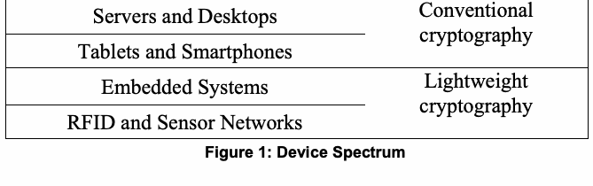

NIST IR 8114 日本語訳
英語タイトル : Report on Lightweight Cryptography日本語タイトル : 軽量暗号に関する報告書
公開日 : 2017-03-28
原文URL : https://csrc.nist.gov/pubs/ir/8114/final
翻訳編集 : 自動生成（有志による非公式の日本語訳）, 原文取得日 : 2026-10-31, 訳文 : 257 / 258 ブロック
[要約] NIST IR 8114 は、NIST の軽量暗号プロジェクトの概要と、軽量暗号アルゴリズムの標準化の計画を述べた報告書です。NIST が承認した既存の暗号標準は汎用コンピュータ向けに設計されており、資源の限られた小型デバイスでは性能が許容できない場合があることが、このプロジェクトの背景として説明されています。軽量暗号の対象デバイス、性能指標などを概観したうえで、2013 年に始まったプロジェクトの内容を整理します。NIST は公開のプロセスで軽量アルゴリズムのポートフォリオを作成することを決定しており、要件を定める土台として利害関係者への質問事項を掲げています。
NISTIR 8114
NISTIR 8114
Report on Lightweight Cryptography
軽量暗号に関する報告書
Kerry A. McKay
Larry Bassham
Meltem Sönmez Turan
Nicky Mouha
Kerry A. McKay
Larry Bassham
Meltem Sönmez Turan
Nicky Mouha
This publication is available free of charge from:
https://doi.org/10.6028/NIST.IR.8114
この刊行物は次の場所から無料で入手できます:
https://doi.org/10.6028/NIST.IR.8114
［NIST のロゴ。公的な標章のため、この非公式サイトには掲載していません。原本 PDF を参照してください。］
NISTIR 8114
NISTIR 8114
Report on Lightweight Cryptography
軽量暗号に関する報告書
Kerry A. McKay
Larry Bassham
Meltem Sönmez Turan
Nicky Mouha
Computer Security Division
Information Technology Laboratory
Kerry A. McKay
Larry Bassham
Meltem Sönmez Turan
Nicky Mouha
コンピュータセキュリティ部門
情報技術研究所
This publication is available free of charge from:
https://doi.org/10.6028/NIST.IR.8114
この刊行物は次の場所から無料で入手できます:
https://doi.org/10.6028/NIST.IR.8114
March 2017
2017 年 3 月
U.S. Department of Commerce
Wilbur L. Ross, Jr., Secretary
米国商務省
Wilbur L. Ross, Jr. 長官
National Institute of Standards and Technology
Kent Rochford, Acting NIST Director and Under Secretary of Commerce for Standards and Technology
米国国立標準技術研究所
Kent Rochford、NIST 所長代行兼商務次官（標準・技術担当）
National Institute of Standards and Technology Internal Report 8114
21 pages (March 2017)
米国国立標準技術研究所 内部報告書 8114
21 ページ（2017 年 3 月）
This publication is available free of charge from:
https://doi.org/10.6028/NIST.IR.8114
この刊行物は次の場所から無料で入手できます:
https://doi.org/10.6028/NIST.IR.8114
Certain commercial entities, equipment, or materials may be identified in this document in order to describe an experimental procedure or concept adequately. Such identification is not intended to imply recommendation or endorsement by NIST, nor is it intended to imply that the entities, materials, or equipment are necessarily the best available for the purpose.
本書では、実験の手順や概念を適切に説明するために、特定の商業団体、機器、材料に言及している場合があります。そのような言及は、NIST による推奨や推薦を意味するものではなく、それらの団体、材料、機器がその目的に利用可能なもののうち必ずしも最良であることを意味するものでもありません。
There may be references in this publication to other publications currently under development by NIST in accordance with its assigned statutory responsibilities. The information in this publication, including concepts and methodologies, may be used by federal agencies even before the completion of such companion publications. Thus, until each publication is completed, current requirements, guidelines, and procedures, where they exist, remain operative. For planning and transition purposes, federal agencies may wish to closely follow the development of these new publications by NIST.
本書には、NIST が法令で定められた責務に従って現在策定中の他の刊行物への言及が含まれる場合があります。それらの関連刊行物の完成前であっても、本書の情報（概念および方法論を含む）を連邦機関が使用してもよいです。したがって、各刊行物が完成するまでは、現行の要件、ガイドライン、手順が存在する場合は、それらが引き続き有効です。計画および移行のため、連邦機関は、NIST によるこれらの新しい刊行物の策定状況を注意深く追うことを検討してもよいです。
Organizations are encouraged to review all draft publications during public comment periods and provide feedback to NIST. Many NIST cybersecurity publications, other than the ones noted above, are available at http://csrc.nist.gov/publications.
組織は、パブリックコメント期間中にすべてのドラフト刊行物を確認し、NIST にフィードバックを提供することが推奨されます。上記以外の NIST の多くのサイバーセキュリティ刊行物は、http://csrc.nist.gov/publications で入手できます。
Comments on this publication may be submitted to:
本刊行物へのコメントは、次の宛先に提出できます:
National Institute of Standards and Technology
Attn: Computer Security Division, Information Technology Laboratory
100 Bureau Drive (Mail Stop 8930) Gaithersburg, MD 20899-8930
Email: lightweight-crypto@nist.gov
米国国立標準技術研究所
宛先: Computer Security Division, Information Technology Laboratory
100 Bureau Drive (Mail Stop 8930) Gaithersburg, MD 20899-8930
電子メール: lightweight-crypto@nist.gov
All comments are subject to release under the Freedom of Information Act (FOIA).
すべてのコメントは、情報自由法（FOIA）に基づく公開の対象となります。
Reports on Computer Systems Technology
コンピュータシステム技術に関する報告書
The Information Technology Laboratory (ITL) at the National Institute of Standards and Technology (NIST) promotes the U.S. economy and public welfare by providing technical leadership for the Nation’s measurement and standards infrastructure. ITL develops tests, test methods, reference data, proof of concept implementations, and technical analyses to advance the development and productive use of information technology. ITL’s responsibilities include the development of management, administrative, technical, and physical standards and guidelines for the cost-effective security and privacy of other than national security-related information in federal information systems.
米国国立標準技術研究所（NIST）の情報技術研究所（ITL）は、国の計測・標準インフラストラクチャに対する技術的なリーダーシップを提供することにより、米国の経済と公共の福祉を促進しています。ITL は、情報技術の開発と生産的な利用を進めるために、テスト、テスト方法、参照データ、概念実証の実装、技術分析を開発しています。ITL の責務には、連邦情報システムにおける、国家安全保障に関するもの以外の情報について、費用対効果の高いセキュリティおよびプライバシーを確保するための管理、運営、技術、物理面の標準およびガイドラインの策定が含まれます。
Abstract
概要
NIST-approved cryptographic standards were designed to perform well on general-purpose computers. In recent years, there has been increased deployment of small computing devices that have limited resources with which to implement cryptography. When current NIST-approved algorithms can be engineered to fit into the limited resources of constrained environments, their performance may not be acceptable. For these reasons, NIST started a lightweight cryptography project that was tasked with learning more about the issues and developing a strategy for the standardization of lightweight cryptographic algorithms. This report provides an overview of the lightweight cryptography project at NIST, and describes plans for the standardization of lightweight cryptographic algorithms.
NIST が承認した暗号標準は、汎用コンピュータで高い性能を発揮するように設計されました。近年、暗号を実装するための資源が限られた小型の計算デバイスの導入が増えています。現在の NIST 承認済みアルゴリズムを、制約のある環境の限られた資源に収まるように設計できる場合でも、その性能は許容できないものになる可能性があります。これらの理由から、NIST は、課題についてさらに知り、軽量暗号アルゴリズムの標準化のための戦略を策定することを任務とする、軽量暗号プロジェクトを開始しました。本報告書は、NIST の軽量暗号プロジェクトの概要を示し、軽量暗号アルゴリズムの標準化の計画を説明します。
Keywords
キーワード
Constrained devices; lightweight cryptography; standardization
制約のあるデバイス、軽量暗号、標準化
Acknowledgements
謝辞
The authors would like to thank their NIST colleagues, Lily Chen and Çağdaş Çalık for providing valuable feedback during the development of this publication.
著者らは、NIST の同僚である Lily Chen と Çağdaş Çalık が、本刊行物の作成中に貴重なフィードバックを提供してくれたことに感謝します。
Executive Summary
エグゼクティブサマリー
There are several emerging areas in which highly constrained devices are interconnected, working in concert to accomplish some task. Examples of these areas include: automotive systems, sensor networks, healthcare, distributed control systems, the Internet of Things (IoT), cyber-physical systems, and the smart grid. Security and privacy can be very important in all of these areas. Because the majority of modern cryptographic algorithms were designed for desktop/server environments, many of these algorithms cannot be implemented in the constrained devices used by these applications. When current NIST-approved algorithms can be engineered to fit into the limited resources of constrained environments, their performance may not be acceptable. For these reasons, NIST started a lightweight cryptography project to investigate the issues and then develop a strategy for the standardization of lightweight cryptographic algorithms.
高度に制約されたデバイスが相互接続され、協調して何らかのタスクを達成する新たな分野が、いくつもあります。これらの分野の例には、自動車システム、センサネットワーク、医療、分散制御システム、モノのインターネット（IoT）、サイバーフィジカルシステム、スマートグリッドがあります。これらのすべての分野で、セキュリティとプライバシーは非常に重要になり得ます。現代の暗号アルゴリズムの大半はデスクトップ／サーバー環境向けに設計されているため、これらのアルゴリズムの多くは、そうしたアプリケーションで使われる制約のあるデバイスに実装できません。現在の NIST 承認済みアルゴリズムを、制約のある環境の限られた資源に収まるように設計できる場合でも、その性能は許容できないものになる可能性があります。これらの理由から、NIST は、課題を調査し、軽量暗号アルゴリズムの標準化のための戦略を策定するために、軽量暗号プロジェクトを開始しました。
This report provides an overview of lightweight cryptography, summarizes the findings of NIST’s lightweight cryptography project, and outlines NIST’s plans for the standardization of lightweight algorithms. In particular, NIST has decided to create a portfolio of lightweight algorithms through an open process. This report includes a list of questions to the stakeholders of lightweight cryptography that will serve as the basis for determining requirements. NIST will develop profiles based on community responses to these questions. These profiles are intended to capture cryptographic algorithm requirements imposed by devices and applications where lightweight cryptography is needed. Algorithms will be recommended for use only in the context of profiles, which describe physical, performance, and security characteristics.
本報告書は、軽量暗号の概要を示し、NIST の軽量暗号プロジェクトの調査結果を要約し、軽量アルゴリズムの標準化に向けた NIST の計画を概説します。特に、NIST は、公開されたプロセスを通じて軽量アルゴリズムのポートフォリオを作成することを決定しました。本報告書には、軽量暗号の関係者に向けた、要件を決定する際の基礎となる質問の一覧が含まれています。NIST は、これらの質問に対するコミュニティからの回答に基づいて、プロファイルを策定します。これらのプロファイルは、軽量暗号が必要とされるデバイスとアプリケーションによって課される、暗号アルゴリズムの要件を捉えることを意図しています。アルゴリズムは、物理的特性、性能特性、セキュリティ特性を記述するプロファイルの文脈においてのみ、使用が推奨されます。
Table of Contents
目次
1 Introduction
1 はじめに
The deployment of small computing devices such as Radio-Frequency IDentification (RFID) tags, industrial controllers, sensor nodes and smart cards is becoming much more common. The shift from desktop computers to small devices brings a wide range of new security and privacy concerns. It is challenging to apply conventional cryptographic standards to small devices. In many conventional cryptographic standards, the tradeoff between security, performance and resource requirements was optimized for desktop and server environments, and this makes them difficult or impossible to implement in resource-constrained devices. When they can be implemented, their performance may not be acceptable.
RFID（Radio-Frequency IDentification）タグ、産業用コントローラ、センサノード、スマートカードなどの小型計算デバイスの導入は、はるかに一般的になりつつあります。デスクトップコンピュータから小型デバイスへの移行は、セキュリティとプライバシーに関する幅広い新たな懸念をもたらします。従来の暗号標準を小型デバイスに適用することは困難です。多くの従来の暗号標準では、セキュリティ、性能、資源要件の間のトレードオフが、デスクトップとサーバーの環境向けに最適化されており、このため、資源に制約のあるデバイスへの実装は困難または不可能です。実装できる場合でも、その性能は許容できないものになる可能性があります。
Lightweight cryptography is a subfield of cryptography that aims to provide solutions tailored for resource-constrained devices. There has been a significant amount of work done by the academic community related to lightweight cryptography; this includes efficient implementations of conventional cryptography standards, and the design and analysis of new lightweight algorithms and protocols.
軽量暗号は、資源に制約のあるデバイス向けに調整された解決策の提供を目指す、暗号の一分野です。学術コミュニティは、軽量暗号に関して多くの成果を挙げてきました。これには、従来の暗号標準の効率的な実装や、新しい軽量アルゴリズムとプロトコルの設計と分析が含まれます。
In 2013, NIST initiated a lightweight cryptography project to study the performance of the current NIST-approved cryptographic standards on constrained devices and to understand the need for dedicated lightweight cryptography standards, and if the need is identified, to design a transparent process for standardization. NIST held two Lightweight Cryptography Workshops in Gaithersburg, MD, to solicit public feedback on the constraints and limitations of the target devices, requirements and characteristics of real-world applications of lightweight cryptography.1
2013 年に、NIST は、現在の NIST 承認済み暗号標準の制約のあるデバイスでの性能を調べ、専用の軽量暗号標準の必要性を把握し、必要性が確認された場合には、標準化のための透明性のあるプロセスを設計するために、軽量暗号プロジェクトを開始しました。NIST は、対象デバイスの制約と限界、および軽量暗号の実世界のアプリケーションの要件と特性について、一般からのフィードバックを求めるために、メリーランド州 Gaithersburg で 2 回の Lightweight Cryptography Workshop を開催しました。1
Recently, NIST has decided to create a portfolio of lightweight algorithms through an open process. In this report, we aim to summarize the finding of the lightweight cryptography project and to outline NIST’s plans for the standardization of lightweight algorithms. This report also includes a list of questions to the stakeholders of lightweight cryptography that will serve as the basis for determining requirements. Responses to the questions should be sent to lightweight-crypto@nist.gov with the subject line “Responses to questions on lightweight crypto requirements”.
最近、NIST は、公開されたプロセスを通じて軽量アルゴリズムのポートフォリオを作成することを決定しました。本報告書では、軽量暗号プロジェクトの調査結果を要約し、軽量アルゴリズムの標準化に向けた NIST の計画を概説することを目指します。本報告書には、軽量暗号の関係者に向けた、要件を決定する際の基礎となる質問の一覧も含まれています。質問への回答は、件名を「Responses to questions on lightweight crypto requirements」として、lightweight-crypto@nist.gov に送ってください。
The remainder of this report is organized as follows. Section 2 provides an overview of lightweight cryptography, including target devices, performance metrics and lightweight crypto algorithms, performance of NIST standards in constrained environments and lightweight crypto standards. Section 3 provides information about NIST’s lightweight cryptography project, including the proposed path for the standardization of lightweight algorithms, design considerations, a list of questions for stakeholders and a profile template that will be used in the evaluation process.
本報告書の残りは次のように構成されています。第 2 節では、対象デバイス、性能指標、軽量暗号アルゴリズム、制約のある環境における NIST 標準の性能、軽量暗号標準を含む、軽量暗号の概要を示します。第 3 節では、軽量アルゴリズムの標準化に向けて提案されている道筋、設計上の考慮事項、関係者への質問の一覧、評価プロセスで使用するプロファイルのテンプレートを含む、NIST の軽量暗号プロジェクトに関する情報を示します。
2 Overview of Lightweight Cryptography
2 軽量暗号の概要
This section introduces various aspects of lightweight cryptography, including target devices, performance metrics, applications and dedicated designs.
この節では、対象デバイス、性能指標、アプリケーション、専用の設計など、軽量暗号のさまざまな側面を紹介します。
2.1 Target Devices
2.1 対象デバイス
Lightweight cryptography targets a wide variety of devices that can be implemented on a broad spectrum of hardware and software (see Figure 1). On the high end of the device spectrum are servers and desktop computers followed by tablets and smartphones. Conventional cryptographic algorithms generally perform well in these devices; therefore, these platforms do not require lightweight algorithms. On the lower end of the spectrum are devices such as embedded systems, RFID devices and sensor networks. Lightweight cryptography is primarily focused on the highly-constrained devices that can be found at this end of the spectrum.
軽量暗号は、幅広いハードウェアとソフトウェア上に実装できる、多様なデバイスを対象としています（図 1 を参照）。デバイスのスペクトルの上位には、サーバーとデスクトップコンピュータがあり、その次にタブレットとスマートフォンが続きます。従来の暗号アルゴリズムは、一般に、これらのデバイスで高い性能を発揮するため、これらのプラットフォームには軽量アルゴリズムは必要ありません。スペクトルの下位には、組込みシステム、RFID デバイス、センサネットワークなどのデバイスがあります。軽量暗号は、主に、スペクトルのこの端に見られる、高度に制約されたデバイスに焦点を当てています。
| Servers and Desktops | Conventional cryptography |
| Tablets and Smartphones | |
| Embedded Systems | Lightweight cryptography |
| RFID and Sensor Networks |
原本PDFの抜粋画像

| サーバーとデスクトップ | 従来の暗号 |
| タブレットとスマートフォン | |
| 組込みシステム | 軽量暗号 |
| RFID とセンサネットワーク |
Figure 1: Device Spectrum
図 1: デバイスのスペクトル
Microcontrollers are available with a wide array of performance attributes. Although 8-bit, 16-bit and 32-bit microcontrollers are the most common, there are significant sales of 4-bit microcontrollers for certain ultra-low cost applications. A wide variety of instruction sets exist, which typically only contain a small number of simple instructions. This may result in a large number of cycles to execute common cryptographic algorithms, which may make them too slow or energy-consuming for the intended application. This is particularly a problem when it is necessary to satisfy real-time constraints using a limited amount of energy.
マイクロコントローラは、幅広い性能特性のものが入手できます。8 ビット、16 ビット、32 ビットのマイクロコントローラが最も一般的ですが、一部の超低コストのアプリケーション向けに、4 ビットのマイクロコントローラもかなりの数が販売されています。命令セットは多種多様に存在し、通常、含まれる命令は少数の単純なものだけです。このため、一般的な暗号アルゴリズムの実行に多くのサイクルを要し、想定するアプリケーションにとっては、遅すぎる、またはエネルギーを消費しすぎるものになる可能性があります。これは特に、限られた量のエネルギーでリアルタイムの制約を満たす必要がある場合に問題となります。
For some microcontrollers, the amount of random-access memory (RAM) and read-only memory (ROM) can be extremely limited. For example, the TI COP912C [66], NXP RS08 [56] or Microchip PIC10/12/16 microcontrollers [50] can have 64 bytes of RAM or less, going down to as little as 16 bytes of RAM.
一部のマイクロコントローラでは、ランダムアクセスメモリ（RAM）と読み取り専用メモリ（ROM）の量が極めて限られている場合があります。たとえば、TI COP912C [66]、NXP RS08 [56]、Microchip PIC10/12/16 マイクロコントローラ [50] では、RAM が 64 バイト以下の場合があり、わずか 16 バイトの RAM まで少なくなります。
On the bottom of the spectrum there are RFID and sensor networks, which are often realized in an application-specific integrated circuit (ASIC) in order to satisfy some of the most stringent implementation constraints. Of particular interest are ultra-high frequency (UHF) RFID tags, for example using the widely deployed EPCGlobal Gen2 [23] and ISO/IEC 18000-63 [38] standards.
スペクトルの下位には、RFID とセンサネットワークがあり、これらは、最も厳しい実装上の制約のいくつかを満たすために、特定用途向け集積回路（ASIC）で実現されることがよくあります。特に注目されるのは、広く導入されている EPCGlobal Gen2 [23] や ISO/IEC 18000-63 [38] の標準を使用する、超高周波（UHF）の RFID タグなどです。
For RFID tags that are not battery-powered, only a limited amount of power is available from the environment. Such devices require cryptographic algorithms that not only use a very small amount of gate equivalents (GEs), but also meet stringent timing and power requirements. A study on the constraints of such devices for cryptographic applications was performed in [61].
バッテリーで動作しない RFID タグでは、環境から得られる電力は限られた量だけです。このようなデバイスには、ゲート等価数（GE）の使用量が非常に少ないだけでなく、厳しいタイミング要件と電力要件を満たす暗号アルゴリズムが必要です。暗号アプリケーションにおけるこのようなデバイスの制約についての研究が、[61] で行われています。
Lightweight algorithms may be subject to various other constraints, a topic that will be explored during the first phase of the standardization effort. The aforementioned examples are therefore not intended to be an exhaustive list, but instead to illustrate settings where conventional algorithms cannot be implemented, in order to understand the need for lightweight alternatives.
軽量アルゴリズムには、そのほかにもさまざまな制約が課される場合があり、これは標準化の取り組みの第 1 段階で検討されるテーマです。したがって、上記の例は網羅的な一覧を意図したものではなく、従来のアルゴリズムを実装できない状況を示して、軽量な代替手段の必要性を理解するためのものです。
While lightweight cryptography primarily targets devices at the low end of the device spectrum, it is important to note that it may be necessary to implement lightweight algorithms at the high end of the spectrum as well. For example, many resource-constrained sensors may send information to an aggregator that, by most accounts, is not constrained. However, the aggregator must support lightweight algorithms in order to interoperate with the constrained sensors when they use lightweight cryptographic algorithms. In short, the environment and application need to be factored into the decision of whether or not conventional standards are acceptable. It is not just the limitation of a particular device that drives the need for lightweight cryptography, but also the other devices in the application that it directly interacts with.
軽量暗号は主にデバイスのスペクトルの下位のデバイスを対象としていますが、スペクトルの上位でも軽量アルゴリズムを実装する必要がある場合があることに注意することが重要です。たとえば、資源に制約のある多くのセンサが、ほとんどの見方で制約のないアグリゲータに情報を送信することがあります。しかし、アグリゲータは、制約のあるセンサが軽量暗号アルゴリズムを使用する場合に、それらと相互運用するために、軽量アルゴリズムをサポートしなければなりません。要するに、従来の標準が許容できるかどうかの判断には、環境とアプリケーションを考慮に入れる必要があります。軽量暗号の必要性を生むのは、特定のデバイスの制約だけでなく、そのデバイスが直接やり取りするアプリケーション内の他のデバイスでもあります。
2.2 Performance Metrics
2.2 性能指標
In cryptographic algorithm design, there is a tradeoff between performance and resources required for a given security level. Performance can be expressed in terms such as power and energy consumption, latency, and throughput. The resources required for a hardware implementation are usually summarized in gate area, gate equivalents, or logic blocks (also known as configurable logic blocks, logic elements, adaptive logic modules or slices). In software, this is reflected in register, RAM and ROM usage. Resource requirements are sometimes referred to as costs, as adding more gates or memory tends to increase the production cost of a device.
暗号アルゴリズムの設計では、性能と、所与のセキュリティ強度に必要な資源との間にトレードオフがあります。性能は、消費電力、消費エネルギー、レイテンシ、スループットなどの用語で表すことができます。ハードウェア実装に必要な資源は、通常、ゲート面積、ゲート等価数、またはロジックブロック（構成可能ロジックブロック、ロジックエレメント、適応型ロジックモジュール、スライスとも呼ばれます）にまとめられます。ソフトウェアでは、これはレジスタ、RAM、ROM の使用量に反映されます。ゲートやメモリを増やすとデバイスの製造コストが増える傾向があるため、資源要件はコストと呼ばれることもあります。
Power and energy consumption are relevant metrics due to the nature of many constrained devices. Power may be of particular importance in devices that harvest power from their surroundings. An example would be an RFID chip that uses the electromagnetic field transmitted by a reader to power its internal circuit. Energy consumption (i.e., power consumption over a certain time period) is especially important in battery-operated devices that have a fixed amount of stored energy. The batteries in some devices may be difficult or impossible to recharge or replace once deployed. It should also be noted that power consumption depends on many factors other than the algorithm used, such as the threshold voltage, the clock frequency and the technology used for implementation.
多くの制約のあるデバイスの性質により、電力とエネルギー消費は関連する指標です。電力は、周囲から電力を取り込むデバイスで特に重要となる場合があります。一例は、リーダーが送信する電磁界を使って内部回路に電力を供給する RFID チップです。エネルギー消費（すなわち、ある期間にわたる消費電力）は、蓄えられたエネルギーの量が固定されている、バッテリー駆動のデバイスで特に重要です。一部のデバイスのバッテリーは、導入後は充電や交換が困難または不可能な場合があります。消費電力は、使用するアルゴリズム以外にも、しきい値電圧、クロック周波数、実装に使用する技術など、多くの要因に左右されることにも注意すべきです。
Latency is especially relevant for certain real-time applications, for example automotive applications where very fast response times for components such as steering, airbags or brakes are required. It can be defined as the measure of time between the initial request of an operation and producing the output. For example, the latency of an encryption operation is the time between the initial request for the encryption of a plaintext and the reply that returns the corresponding ciphertext.
レイテンシは、特定のリアルタイムアプリケーション、たとえば、ステアリング、エアバッグ、ブレーキなどの構成要素に非常に高速な応答時間が求められる自動車アプリケーションで、特に関連します。これは、操作の最初の要求から出力が生成されるまでの時間の尺度として定義できます。たとえば、暗号化操作のレイテンシは、平文の暗号化の最初の要求から、対応する暗号文を返す応答までの時間です。
Throughput is the rate at which new outputs (e.g., authentication tags or ciphertext) are produced. Unlike conventional algorithms, high throughput may not be a design goal in lightweight designs. However, moderate throughput is still required in most applications.
スループットは、新しい出力（たとえば、認証タグや暗号文）が生成される割合です。従来のアルゴリズムと異なり、軽量な設計では、高いスループットが設計のゴールではない場合があります。ただし、ほとんどのアプリケーションでは、中程度のスループットは依然として必要です。
2.2.1 Hardware-Specific Metrics
2.2.1 ハードウェア固有の指標
Resource requirements for hardware platforms are typically described in terms of gate area. The area of an implementation depends on the technology and the standard cell library, and is measured in µm2. Area can be stated in terms of logic blocks for field-programmable gate arrays (FPGAs), or by GEs for ASIC implementations.
ハードウェアプラットフォームの資源要件は、通常、ゲート面積で記述されます。実装の面積は、技術とスタンダードセルライブラリに依存し、µm2 で測定されます。面積は、フィールドプログラマブルゲートアレイ（FPGA）ではロジックブロックで、ASIC の実装では GE で表すことができます。
On FPGAs, a logic block is the basic reconfigurable unit, that contains a number of look-up tables (LUTs), flip-flops and multiplexers. Logic blocks are implemented differently on different FPGAs. The number of LUTs, flip-flops and multiplexers depends on the FPGA family, as well as the number of input and output bits of the LUTs.
FPGA では、ロジックブロックは再構成可能な基本単位であり、複数のルックアップテーブル（LUT）、フリップフロップ、マルチプレクサを含みます。ロジックブロックの実装は、FPGA ごとに異なります。LUT、フリップフロップ、マルチプレクサの数は、FPGA のファミリーと、LUT の入出力ビット数に依存します。
For ASICs, one GE is equivalent to the area that is required by the two-input NAND gate. The area in GEs is obtained by dividing the area in µm2 by the area of the NAND gate. The number of GEs of a hardware implementation is therefore very specific to a particular technology, so that it is not possible to directly compare the number of GEs of implementations across different technologies.
ASIC では、1 GE は 2 入力 NAND ゲートが必要とする面積に相当します。GE で表した面積は、µm2 で表した面積を NAND ゲートの面積で割って求めます。したがって、ハードウェア実装の GE の数は特定の技術に非常に固有であり、異なる技術にわたる実装の GE の数を直接比較することはできません。
A low-cost RFID tag may have a total gate count of 1,000 to 10,000 gates, out of which only 200 to 2,000 may be used for security purposes [46]. Area requirements and power consumption can be correlated, in which case minimizing area also tends to reduce the power consumption.
低コストの RFID タグは、ゲートの総数が 1,000 から 10,000 ゲートで、そのうちセキュリティの目的に使えるのは 200 から 2,000 ゲートのみである場合があります [46]。面積要件と消費電力は相関することがあり、その場合は、面積を最小化すると消費電力も減る傾向があります。
2.2.2 Software-Specific Metrics
2.2.2 ソフトウェア固有の指標
For software applications, resource requirements can be measured by the number of registers, as well as the number of bytes of RAM and ROM that are required. Functions that use a small number of registers have a lower calling overhead, as fewer variables must be placed on the stack before the registers can be overwritten. ROM is used to store the program code, and can include fixed data, such as S-boxes or hardcoded round keys, while RAM is used to store intermediate values that can be used in computations. This can lead to additional tradeoffs between calculating values on the fly versus looking up values in a table.
ソフトウェアアプリケーションでは、資源要件は、レジスタの数と、必要な RAM と ROM のバイト数で測定できます。使用するレジスタが少ない関数は、レジスタを上書きする前にスタックに置く必要のある変数が少なくなるため、呼び出しのオーバーヘッドが小さくなります。ROM はプログラムコードの保存に使われ、S-box やハードコードされたラウンド鍵などの固定データを含む場合があります。一方、RAM は計算に使える中間値の保存に使われます。このため、値をその場で計算することと、表から値を引くこととの間に、さらなるトレードオフが生じる場合があります。
2.3 Lightweight Cryptographic Primitives
2.3 軽量暗号プリミティブ
Over the last decade, a number of lightweight cryptographic primitives, including block ciphers, hash functions, message authentication codes and stream ciphers, have been proposed which offer performance advantages over conventional cryptographic standards. These primitives differ from conventional algorithms with the assumptions that lightweight primitives are not intended for a wide range of applications, and may impose limits on the power of the attacker. For example, the amount of data available to the attacker under a single key may be limited. However, it should be noted that this does not mean that the lightweight algorithms are weak – rather, the idea is to use advancements that result in designs with a better balance between security, performance, and resource requirements for specific resource-constrained environments.
過去 10 年にわたって、ブロック暗号、ハッシュ関数、メッセージ認証コード、ストリーム暗号を含む多くの軽量暗号プリミティブが提案されており、従来の暗号標準に比べて性能面の利点を提供しています。これらのプリミティブは、軽量プリミティブが幅広いアプリケーションを想定しておらず、攻撃者の能力に制限を課す場合があるという前提の点で、従来のアルゴリズムと異なります。たとえば、単一の鍵のもとで攻撃者が利用できるデータの量が、限られている場合があります。ただし、これは軽量アルゴリズムが弱いという意味ではないことに注意すべきです。そうではなく、特定の資源に制約のある環境に向けて、セキュリティ、性能、資源要件のより良いバランスを持つ設計を実現する進歩を活用する、という考え方です。
2.3.1 Lightweight Block Ciphers
2.3.1 軽量ブロック暗号
A number of lightweight block ciphers have been proposed to achieve performance advantages over NIST’s Advanced Encryption Standard (AES)[67], particularly AES-128. Some of these ciphers were designed by simplifying conventional, well-analyzed block ciphers to improve their efficiency. As an example, DESL [47] is a variant of DES, where the round function uses a single S-box instead of eight and omits the initial and final permutations to improve the size of the hardware implementation. Alternatively, some of the algorithms are dedicated block ciphers that were designed from scratch. PRESENT [9] is one of the first lightweight block cipher designs that was proposed for constrained hardware environments. SIMON and SPECK [6] are families of lightweight block ciphers that were designed to be simple, flexible, and perform well in hardware and software. There are also algorithms from the 1990s such as RC5 [60], TEA [71] and XTEA [55], which consist of simple round structures that make them suitable for constrained software environments. A non-exhaustive list of lightweight block ciphers is provided in [7].
NIST の Advanced Encryption Standard（AES）[67]、特に AES-128 に対する性能上の利点を達成するために、多くの軽量ブロック暗号が提案されています。これらの暗号の一部は、従来の、十分に分析されたブロック暗号を単純化して効率を高めることで設計されました。一例として、DESL [47] は DES の変種で、ラウンド関数が 8 個ではなく 1 個の S-box を使い、初期置換と最終置換を省いて、ハードウェア実装の大きさを改善しています。また、一部のアルゴリズムは、ゼロから設計された専用のブロック暗号です。PRESENT [9] は、制約のあるハードウェア環境向けに提案された、最初期の軽量ブロック暗号の設計の 1 つです。SIMON と SPECK [6] は、単純で柔軟であり、ハードウェアとソフトウェアで高い性能を発揮するように設計された、軽量ブロック暗号のファミリーです。また、RC5 [60]、TEA [71]、XTEA [55] など、1990 年代のアルゴリズムもあり、単純なラウンド構造からなるため、制約のあるソフトウェア環境に適しています。軽量ブロック暗号の網羅的でない一覧が [7] に示されています。
The performance benefits of lightweight block ciphers over conventional block ciphers are achieved using lightweight design choices, such as:
従来のブロック暗号に対する軽量ブロック暗号の性能上の利点は、次のような軽量な設計上の選択によって達成されます:
•Smaller block sizes: To save memory, lightweight block ciphers may use smaller block sizes than AES (e.g., 64 bits or 80 bits, rather than 128 bits). It should also be noted that using small block sizes reduces limits on the maximum number of plaintext blocks to be encrypted. For example, outputs of a 64-bit block cipher can be distinguished from a random sequence using around \(2^{32}\) blocks for some of the approved modes of operations. Depending on the algorithm, this may lead to attacks such as plaintext recovery or key recovery or with non-negligible probabilities.
•より小さいブロックサイズ: メモリを節約するために、軽量ブロック暗号は、AES より小さいブロックサイズ（たとえば、128 ビットではなく 64 ビットや 80 ビット）を使うことがあります。また、小さいブロックサイズを使うと、暗号化できる平文ブロックの最大数についての制限が厳しくなることにも注意すべきです。たとえば、承認されている動作モードの一部では、約 \(2^{32}\) ブロックを使って、64 ビットブロック暗号の出力を乱数列から区別できます。アルゴリズムによっては、これにより、無視できない確率での平文の復元や鍵の復元などの攻撃につながる可能性があります。
•Smaller key sizes: Some lightweight block ciphers use small key sizes (less than 96 bits) for efficiency (e.g., 80-bit PRESENT). At the time of this writing, the minimum key size required by NIST is 112 bits [4].
•より小さい鍵サイズ: 一部の軽量ブロック暗号は、効率のために小さい鍵サイズ（96 ビット未満）を使います（たとえば、80 ビットの PRESENT）。本書の執筆時点で、NIST が要求する最小の鍵サイズは 112 ビットです [4]。
•Simpler rounds: The components and operations used in lightweight block ciphers are typically simpler than those of conventional block ciphers. In lightweight designs using S-boxes, 4-bit S-boxes are preferred over 8-bit S-boxes. This reduction in size results in significant area savings. For example, the 4-bit S-box used in PRESENT required 28 GEs, whereas the AES S-box required 395 GEs in [21]. For hardware-oriented designs, bit permutations (such as those used in PRESENT), or recursive MDS matrices (as in PHOTON [24] and LED [25]) may be preferred over complex linear layers. When rounds are simpler, they may need to be iterated more times to achieve security.
•より単純なラウンド: 軽量ブロック暗号で使われる構成要素と演算は、通常、従来のブロック暗号のものより単純です。S-box を使う軽量な設計では、8 ビットの S-box より 4 ビットの S-box が好まれます。この縮小により、面積が大幅に節約されます。たとえば、PRESENT で使われる 4 ビットの S-box には 28 GE が必要でしたが、AES の S-box には [21] で 395 GE が必要でした。ハードウェア指向の設計では、複雑な線形層よりも、（PRESENT で使われているような）ビット置換や、（PHOTON [24] や LED [25] のような）再帰的な MDS 行列が好まれる場合があります。ラウンドが単純な場合は、セキュリティを達成するために、より多くの回数を繰り返す必要があることがあります。
•Simpler key schedules: Complex key schedules increase the memory, latency and the power consumption of implementations; therefore, most of the lightweight block ciphers use simple key schedules that can generate sub-keys on the fly. This may enable attacks using related keys, weak keys, known keys or even chosen keys. Using a secure key derivation function (KDF) can prevent some of these attacks (for examples, see [11, 12, 15, 64]).
•より単純な鍵スケジュール: 複雑な鍵スケジュールは、実装のメモリ、レイテンシ、消費電力を増やします。そのため、ほとんどの軽量ブロック暗号は、その場でサブ鍵を生成できる単純な鍵スケジュールを使っています。これにより、関連鍵、弱鍵、既知鍵、さらには選択鍵を使った攻撃が可能になる場合があります。安全な鍵導出関数（KDF）を使うと、これらの攻撃の一部を防げます（例については [11, 12, 15, 64] を参照）。
•Minimal implementations: There are several modes of operation and protocols that require only the encryption function of a block cipher. Some applications may require a device to only support one of the encryption or decryption operations. Implementing only the necessary functions of a cipher may require fewer resources than implementing the full cipher.
•最小限の実装: ブロック暗号の暗号化関数のみを必要とする動作モードとプロトコルがいくつかあります。アプリケーションによっては、デバイスが暗号化操作と復号操作のいずれか一方のみをサポートすればよい場合もあります。暗号の必要な関数のみを実装すると、暗号全体を実装する場合より少ない資源で済む場合があります。
2.3.2 Lightweight Hash Functions
2.3.2 軽量ハッシュ関数
Conventional hash functions may not be suitable for constrained environments, mainly due to their large internal state sizes and high power consumption requirements. This has led to the development of lightweight hash functions, such as PHOTON [24], Quark [2], SPONGENT [8], and Lesamnta-LW [27]. The expected usage of conventional and lightweight hash functions differs in various aspects such as [58]:
従来のハッシュ関数は、主にその大きな内部状態のサイズと高い消費電力の要件のために、制約のある環境に適さない場合があります。このことが、PHOTON [24]、Quark [2]、SPONGENT [8]、Lesamnta-LW [27] などの軽量ハッシュ関数の開発につながりました。従来のハッシュ関数と軽量ハッシュ関数の想定される用途は、次のようなさまざまな点で異なります [58]:
•Smaller internal state and output sizes: Large output sizes are important for applications that require collision resistance of hash functions. For applications that do not require collision resistance, smaller internal states and output sizes might be used. When a collision-resistant hash function is required, it may be acceptable that this hash function has the same security against preimage, second-preimage and collision attacks. This may reduce the size of the internal state.
•より小さい内部状態と出力サイズ: 大きな出力サイズは、ハッシュ関数の衝突困難性を必要とするアプリケーションで重要です。衝突困難性を必要としないアプリケーションでは、より小さい内部状態と出力サイズを使える場合があります。衝突困難なハッシュ関数が必要な場合、そのハッシュ関数が、原像攻撃、第 2 原像攻撃、衝突攻撃に対して同じ安全性を持つことが許容される場合があります。これにより、内部状態のサイズを小さくできる場合があります。
•Smaller message size: Conventional hash functions are expected to support inputs with very large sizes (around \(2^{64}\) bits). In most of the target protocols for lightweight hash functions, typical input sizes are much smaller (e.g., at most 256 bits). Hash functions that are optimized for short messages may therefore be more suitable for lightweight applications.
•より小さいメッセージサイズ: 従来のハッシュ関数は、非常に大きなサイズ（約 \(2^{64}\) ビット）の入力をサポートすることが期待されています。軽量ハッシュ関数の対象プロトコルの大半では、典型的な入力サイズははるかに小さい（たとえば、最大 256 ビット）です。したがって、短いメッセージ向けに最適化されたハッシュ関数のほうが、軽量アプリケーションに適している場合があります。
2.3.3 Lightweight Message Authentication Codes
2.3.3 軽量メッセージ認証コード
A message authentication code (MAC) generates a tag from a message and a secret key, which is used to verify the authenticity and the integrity of the message. Tag sizes are recommended to be at least 64 bits for typical applications. For certain applications such as VoIP (Voice over IP), occasionally accepting an inauthentic message may have limited impact on the security of the application, so that shorter tags can be used after careful consideration. Chaskey [52], TuLP [22], and LightMAC [48] are some of the examples of lightweight MAC algorithms.
メッセージ認証コード（MAC）は、メッセージと共通鍵からタグを生成し、メッセージの真正性と完全性の検証に使われます。典型的なアプリケーションでは、タグのサイズは少なくとも 64 ビットにすることが推奨されます。VoIP（Voice over IP）などの特定のアプリケーションでは、真正でないメッセージを時折受け入れても、アプリケーションのセキュリティへの影響が限られるため、慎重な検討の後で、より短いタグを使える場合があります。Chaskey [52]、TuLP [22]、LightMAC [48] は、軽量 MAC アルゴリズムの例の一部です。
2.3.4 Lightweight Stream Ciphers
2.3.4 軽量ストリーム暗号
Stream ciphers are also promising primitives for constrained environments. The eSTREAM competition [20], organized by the European Network of Excellence for Cryptology, aimed to identify new stream ciphers that might be suitable for widespread adoption. The finalists of the competition were announced in 2008 and included three stream ciphers for hardware applications with restricted resources:
ストリーム暗号も、制約のある環境にとって有望なプリミティブです。European Network of Excellence for Cryptology が主催した eSTREAM コンペティション [20] は、広く採用するのに適した新しいストリーム暗号を特定することを目的としていました。このコンペティションの最終候補は 2008 年に発表され、資源が限られたハードウェアアプリケーション向けの 3 つのストリーム暗号が含まれていました:
•Grain [26] is widely analyzed and provides implementation flexibility, and also has a version that supports authentication.
•Grain [26] は広く分析されており、実装の柔軟性があり、認証をサポートするバージョンもあります。
•Trivium [16] is a widely analyzed design; however, it only supports 80-bit keys.
•Trivium [16] は広く分析された設計ですが、サポートする鍵は 80 ビットのみです。
•Mickey [3] is less analyzed compared to Grain and Trivium. It provides less implementation flexibility and is susceptible to timing and power analysis, due to irregular clocking.
•Mickey [3] は、Grain や Trivium に比べて分析が進んでいません。実装の柔軟性が低く、不規則なクロッキングのために、タイミング解析と電力解析の影響を受けやすいです。
2.4 NIST-Approved Cryptographic Primitives in Constrained Environments
2.4 制約のある環境における NIST 承認済み暗号プリミティブ
This section discusses the performance of NIST-approved cryptographic standards in resource-constrained environments.
この節では、資源に制約のある環境における、NIST 承認済み暗号標準の性能を論じます。
•Block ciphers: There are two NIST-approved block cipher algorithms: AES and Triple Data Encryption Algorithm (TDEA)[5].2 The AES family of block ciphers includes three variants AES-128, AES-192, and AES-256 that support key sizes of 128, 192 and 256 bits, respectively. All AES variants have a block size of 128 bits. For lightweight cryptography purposes, the most suitable variant of the family is AES-128, due to the number of rounds and the size of the key schedule. Existing compact implementations of AES-128 require 2090 GEs [49] to 2400 GEs [51]. AES is mainly designed for software applications. Using 8-bit AVR microcontrollers, encryption has been achieved in 124.6 cycles per byte and decryption in 181.3 cycles per byte, with a code size less than 2 Kbyte [57]. AES performs very well on certain 8-bit microcontrollers, making it a good choice for those platforms. However, it is not possible to implement the encryption and decryption functions of AES (or TDEA) simultaneously on a Renesas RL78 16-bit microcontroller [59] when the amount of ROM is limited to 512 bytes and RAM is limited to 128 bytes [14]. For applications where the performance of AES is acceptable, AES should be used.
•ブロック暗号: NIST 承認済みのブロック暗号アルゴリズムは、AES と Triple Data Encryption Algorithm（TDEA）[5] の 2 つです。2 AES ブロック暗号のファミリーには、それぞれ 128、192、256 ビットの鍵サイズをサポートする、AES-128、AES-192、AES-256 の 3 つの変種があります。すべての AES の変種のブロックサイズは 128 ビットです。軽量暗号の目的では、ラウンド数と鍵スケジュールのサイズから、このファミリーで最も適した変種は AES-128 です。AES-128 の既存のコンパクトな実装は、2090 GE [49] から 2400 GE [51] を必要とします。AES は主にソフトウェアアプリケーション向けに設計されています。8 ビットの AVR マイクロコントローラを使用して、コードサイズ 2 Kbyte 未満で、暗号化が 1 バイトあたり 124.6 サイクル、復号が 1 バイトあたり 181.3 サイクルで達成されています [57]。AES は、特定の 8 ビットマイクロコントローラで非常に高い性能を発揮するため、それらのプラットフォームにとってよい選択肢です。しかし、Renesas RL78 16 ビットマイクロコントローラ [59] で、ROM の量が 512 バイト、RAM の量が 128 バイトに制限されている場合 [14] には、AES（または TDEA）の暗号化関数と復号関数を同時に実装することはできません。AES の性能が許容できるアプリケーションでは、AES を使用すべきです。
•Hash functions: NIST-approved hash functions are specified in two Federal Information Processing Standards (FIPS) documents: FIPS 180-4 [69] specifies SHA-13 and the SHA-2 family (namely, SHA-224, SHA-256, SHA-384, SHA-512, SHA-512/224 and SHA-512/256) and FIPS 202 [70] specifies the permutation-based SHA-3 family (namely, SHA3-224, SHA3-256, SHA3-384, and SHA3-512). None of these approved hash functions are suitable for use in very constrained environments, mainly due their large internal-state size requirements. Ideguchi et al. [28] studied the RAM requirements of SHA-256, SHA-512 and various SHA-3 candidates on low-cost 8-bit microcontrollers, and found that none of the NIST-approved hash functions could be implemented within 64 bytes of RAM. The internal state size for the SHA-3 family is mainly determined by the width of the underlying 1600-bit permutation. FIPS 202 additionally defines smaller-sized permutations with 25, 50, 100, 200, 400, and 800 bits; some of these variants may later be used to define lightweight variants of SHA-3, however currently these smaller variants are not approved for use in hash functions.
•ハッシュ関数: NIST 承認済みのハッシュ関数は、2 つの Federal Information Processing Standards（FIPS）文書で規定されています。FIPS 180-4 [69] は SHA-13 と SHA-2 ファミリー（すなわち、SHA-224、SHA-256、SHA-384、SHA-512、SHA-512/224、SHA-512/256）を規定し、FIPS 202 [70] は置換ベースの SHA-3 ファミリー（すなわち、SHA3-224、SHA3-256、SHA3-384、SHA3-512）を規定しています。これらの承認済みハッシュ関数はいずれも、主に内部状態のサイズ要件が大きいため、非常に制約のある環境での使用に適していません。Ideguchi et al. [28] は、低コストの 8 ビットマイクロコントローラでの SHA-256、SHA-512、およびさまざまな SHA-3 候補の RAM 要件を調査し、NIST 承認済みのハッシュ関数のいずれも、64 バイトの RAM に収めて実装できないことを見いだしました。SHA-3 ファミリーの内部状態のサイズは、主に基礎となる 1600 ビット置換の幅によって決まります。FIPS 202 は、さらに、25、50、100、200、400、800 ビットのより小さいサイズの置換も定義しています。これらの変種の一部は、後に SHA-3 の軽量な変種を定義するために使われる可能性がありますが、現在のところ、これらのより小さい変種は、ハッシュ関数での使用が承認されていません。
•Authenticated Encryption Algorithms and MACs: Authenticated encryption algorithms provide performance and resource requirement advantages, because they simultaneously provide confidentiality and integrity protection of messages. NIST approves the CCM [18] and GCM [17] block cipher modes that provide authentication and encryption simultaneously. NIST also approves standalone MACs, CMAC [19], GMAC [17], and HMAC [68], to be used for generating and verifying tags to provide message authentication.
•認証付き暗号アルゴリズムと MAC: 認証付き暗号アルゴリズムは、メッセージの機密性と完全性の保護を同時に提供するため、性能と資源要件の面で利点があります。NIST は、認証と暗号化を同時に提供するブロック暗号の動作モードとして、CCM [18] と GCM [17] を承認しています。NIST はまた、メッセージ認証を提供するためのタグの生成と検証に使う、単独の MAC として、CMAC [19]、GMAC [17]、HMAC [68] も承認しています。
2.5 Lightweight Cryptography Standards
2.5 軽量暗号標準
ISO/IEC 29192, Lightweight Cryptography, is a six-part standard that specifies lightweight cryptographic algorithms for confidentiality, authentication, identification, non-repudiation, and key exchange. Part 1 includes general information such as security, classification and implementation requirements [39]. Part 2 specifies the block ciphers PRESENT and CLEFIA [40]. An amendment to Part 2 was proposed in 2014 to include the block ciphers SIMON and SPECK [6] with various block and key size combinations. In 2015, the first working drafts of the amendments with SIMON and SPECK were initiated. Part 3 specifies the stream ciphers Enocoro and Trivium [41]. Part 4 specifies three asymmetric techniques, namely (i) identification scheme cryptoGPS, (ii) authentication and key exchange mechanism ALIKE, and (iii) ID-based signature scheme IBS [42]. An amendment to Part 4 included an Elliptic Curve-based authentication scheme called ELLI [43]. Part 5 specifies three hash functions: PHOTON, SPONGENT, and Lesamnta-LW[44]. Part 6 is dedicated to MACs and is currently under development [45].
ISO/IEC 29192 Lightweight Cryptography は、機密性、認証、識別、否認防止、鍵交換のための軽量暗号アルゴリズムを規定する、6 部構成の標準です。第 1 部には、セキュリティ、分類、実装の要件などの一般的な情報が含まれています [39]。第 2 部は、ブロック暗号の PRESENT と CLEFIA を規定しています [40]。2014 年に、さまざまなブロックサイズと鍵サイズの組み合わせを持つブロック暗号 SIMON と SPECK [6] を含めるための、第 2 部の修正が提案されました。2015 年に、SIMON と SPECK に関する修正の最初の作業原案が開始されました。第 3 部は、ストリーム暗号の Enocoro と Trivium を規定しています [41]。第 4 部は、3 つの公開鍵技術、すなわち、(i) 識別方式 cryptoGPS、(ii) 認証および鍵交換メカニズム ALIKE、(iii) ID ベース署名方式 IBS を規定しています [42]。第 4 部の修正には、ELLI と呼ばれる楕円曲線ベースの認証方式が含まれていました [43]。第 5 部は、3 つのハッシュ関数 PHOTON、SPONGENT、Lesamnta-LW を規定しています [44]。第 6 部は MAC に特化しており、現在策定中です [45]。
ISO/IEC 29167, Automatic Identification and Data Capture Techniques, provides security services for RFID air interface communications. Part 1 [29] describes the architecture, security features, and requirements for security services for RFID devices. Crypto suites are defined in additional parts. Currently, eight suites that specify the use of AES-128, PRESENT-80, ECC-DH, Grain-128A, AES OFB, ECDSA-ECDH, cryptoGPS, and RAMON security services for air interface communication are published in [30-37]. Additional documents are under development.
ISO/IEC 29167 Automatic Identification and Data Capture Techniques は、RFID の無線インターフェース通信のためのセキュリティサービスを提供します。第 1 部 [29] は、RFID デバイスのセキュリティサービスのアーキテクチャ、セキュリティ機能、要件を説明しています。暗号スイートは、追加の部で定義されています。現在、無線インターフェース通信のために、AES-128、PRESENT-80、ECC-DH、Grain-128A、AES OFB、ECDSA-ECDH、cryptoGPS、RAMON の各セキュリティサービスの使用を規定する 8 つのスイートが [30-37] で公開されています。追加の文書が策定中です。
Cryptography Research and Evaluation Committees (CRYPTREC) is a project to evaluate and monitor security of cryptographic techniques used in Japanese e-Government systems [13]. CRYPTREC publishes three types of cipher lists: e-Government Recommended Ciphers List, Candidate Recommended Ciphers List and Monitored Ciphers List. The Lightweight Cryptography working group of CRYPTREC, established in 2013, aims to study and support appropriate lightweight cryptography solutions for e-government systems and any applications where lightweight solutions are needed. The working group surveys research on the state of the art in lightweight cryptography and its applications, performs implementation evaluations, and published a report (in Japanese) [14] as a deliverable in 2015. The target algorithms for implementation in the report were AES, Camellia [1], CLEFIA [63], PRESENT [9], LED [25], Piccolo [62], TWINE [65], and PRINCE [10].
Cryptography Research and Evaluation Committees（CRYPTREC）は、日本の電子政府システムで使われる暗号技術の安全性を評価し監視するプロジェクトです [13]。CRYPTREC は、電子政府推奨暗号リスト、推奨候補暗号リスト、運用監視暗号リストの 3 種類の暗号リストを公表しています。2013 年に設立された CRYPTREC の軽量暗号ワーキンググループは、電子政府システムと、軽量な解決策が必要なあらゆるアプリケーション向けに、適切な軽量暗号の解決策を調査し、支援することを目指しています。このワーキンググループは、軽量暗号とそのアプリケーションの最新技術に関する研究を調査し、実装評価を行い、2015 年に成果物として報告書（日本語）[14] を公表しました。この報告書で実装の対象となったアルゴリズムは、AES、Camellia [1]、CLEFIA [63]、PRESENT [9]、LED [25]、Piccolo [62]、TWINE [65]、PRINCE [10] でした。
3 NIST’s Lightweight Cryptography Project
3 NIST の軽量暗号プロジェクト
NIST develops standards using several different approaches, as described in [53]. NIST has held competitions to select the AES block cipher and the SHA-3 hash functions. These competitions were significant efforts that took place over many years. For example, the SHA-3 competition was announced in 2007, the winner was announced in 2012, and the standardization process was concluded in 2015. Another approach is to adapt standards of other accredited standards development organizations, as was done with HMAC and RSA standards. NIST researchers also develop standards and guidelines in collaboration with experts in academia, industry and government, if no suitable standard exists.
NIST は、[53] で説明されているように、複数の異なる手法で標準を策定しています。NIST は、AES ブロック暗号と SHA-3 ハッシュ関数を選定するために、コンペティションを開催しました。これらのコンペティションは、数年にわたって行われた大規模な取り組みでした。たとえば、SHA-3 コンペティションは 2007 年に発表され、勝者は 2012 年に発表され、標準化のプロセスは 2015 年に完了しました。もう 1 つの手法は、HMAC や RSA の標準で行われたように、他の認定標準策定組織の標準を適応させることです。NIST の研究者は、適切な標準が存在しない場合には、学界、産業界、政府の専門家と協力して標準とガイドラインを策定することもあります。
The landscape for lightweight cryptography is moving so quickly that a standard produced using the competition model is likely to be outdated prior to standardization. Therefore, the most suitable approach for lightweight cryptography, in terms of timeline and project goals, is to develop new recommendations using an open call for proposals to standardize algorithms.
軽量暗号を取り巻く状況は非常に急速に変化しているため、コンペティション方式で作成した標準は、標準化の前に時代遅れになる可能性が高いです。したがって、タイムラインとプロジェクトのゴールの観点から、軽量暗号に最も適した手法は、アルゴリズムを標準化するための提案の公募を使って、新しい勧告を策定することです。
NIST is planning to develop and maintain a portfolio of lightweight algorithms and modes that are approved for limited use. Each algorithm in the portfolio will be tied to one or more profiles, which consist of algorithm goals and acceptable ranges for metrics. This is in contrast to other primitives and modes that are approved for general use. Any restrictions on use will be included in the recommendation or standard where the primitives and modes of the portfolio are specified. Algorithm transitions and deprecation guidance will be provided as algorithms in the portfolio are phased out. The lightweight portfolio is not intended to offer alternative algorithms for general use.
NIST は、限定的な使用が承認された軽量アルゴリズムとモードのポートフォリオを策定し、維持することを計画しています。ポートフォリオ内の各アルゴリズムは、アルゴリズムのゴールと指標の許容範囲からなる 1 つ以上のプロファイルに結び付けられます。これは、一般的な使用が承認されている他のプリミティブやモードとは対照的です。使用に関する制限は、ポートフォリオのプリミティブとモードが規定される勧告または標準に含められます。ポートフォリオ内のアルゴリズムが段階的に廃止される際には、アルゴリズムの移行と非推奨化に関するガイダンスが提供されます。軽量アルゴリズムのポートフォリオは、一般的な使用のための代替アルゴリズムを提供することを意図していません。
3.1 Scope
3.1 範囲
The scope of NIST’s lightweight cryptography project includes all cryptographic primitives and modes that are needed in constrained environments. However, the initial focus of the project is on block ciphers, authenticated encryption schemes, hash functions, message authentication codes, cryptographic permutations, and stream ciphers. When long-term security is needed, these algorithms should either aim for post-quantum security [54], or the application should allow them to be easily replaceable by algorithms with post-quantum security.
NIST の軽量暗号プロジェクトの範囲には、制約のある環境で必要とされるすべての暗号プリミティブとモードが含まれます。ただし、プロジェクトの当初の焦点は、ブロック暗号、認証付き暗号方式、ハッシュ関数、メッセージ認証コード、暗号置換、ストリーム暗号にあります。長期的なセキュリティが必要な場合、これらのアルゴリズムは、耐量子セキュリティ [54] を目指すか、アプリケーションが、耐量子セキュリティを持つアルゴリズムに容易に置き換えられるようにすべきです。
While public key cryptography is not included in the initial focus, it is within the scope of this project. However, it should be noted that public key schemes will only be considered for inclusion in the portfolio under two conditions: 1) they are robust against quantum attacks, and 2) they use a combination of general public key cryptographic schemes with lightweight primitives (e.g., a lightweight hash function). Protocol design is also an important part of achieving the desired level of security while meeting requirements of a constrained environment, but protocol standardization is not within the scope of this project.
公開鍵暗号は当初の焦点には含まれていませんが、本プロジェクトの範囲内にあります。ただし、公開鍵方式は、1) 量子攻撃に対して堅牢であること、2) 一般的な公開鍵暗号方式と軽量プリミティブ（たとえば、軽量ハッシュ関数）の組み合わせを使用すること、という 2 つの条件を満たす場合に限り、ポートフォリオへの収録が検討される点に留意すべきです。プロトコルの設計も、制約のある環境の要件を満たしながら望ましい水準のセキュリティを達成するうえで重要ですが、プロトコルの標準化は本プロジェクトの範囲に含まれません。
3.2 Design Considerations
3.2 設計上の考慮事項
While specific requirements vary by application, there are several generally-desired properties that NIST will be using to evaluate designs.
具体的な要件はアプリケーションによって異なりますが、NIST が設計を評価するために使用する、一般に望まれる特性がいくつかあります。
•Security strength: Any algorithm selected for the portfolio must provide adequate security. In general, the security strength should be at least 112 bits.
•セキュリティ強度: ポートフォリオに選定されるアルゴリズムは、いずれも十分なセキュリティを提供しなければなりません。一般に、セキュリティ強度は少なくとも 112 ビットであるべきです。
•Flexibility: Efficient implementations of an algorithm should be possible across an assortment of platforms. Algorithms should also allow a variety of implementations on a single platform. Tunable algorithms, which use parameters to select properties such as state size and key size, are desirable as they allow implementations with multiple options using fewer resources than multiple algorithms that do not share logic, thereby supporting a wider array of applications.
•柔軟性: アルゴリズムは、さまざまなプラットフォームにわたって効率的に実装できるべきです。また、アルゴリズムは、単一のプラットフォーム上でさまざまな実装を可能にすべきです。状態サイズや鍵サイズなどの特性を選択するためにパラメータを使う調整可能なアルゴリズムが望まれます。これにより、論理を共有しない複数のアルゴリズムを使う場合よりも少ない資源で、複数の選択肢を持つ実装が可能となり、より幅広いアプリケーションをサポートできます。
•Low overhead for multiple functions: Multiple functions (such as encryption and decryption) that share the same core are preferred over functions that have completely different logic. For example, a block cipher where the encryption and decryption operations use similar round functions may be preferable over one that has distinct round functions for encryption and decryption. Different primitives, such as a hash function and block cipher, can also share logic, thus reducing the resources needed to implement multiple algorithms in the same device.
•複数の関数のオーバーヘッドの小ささ: 暗号化と復号などの複数の関数は、完全に異なる論理を持つ関数よりも、同じコアを共有するもののほうが好まれます。たとえば、暗号化操作と復号操作が類似したラウンド関数を使うブロック暗号は、暗号化と復号で異なるラウンド関数を持つブロック暗号よりも望ましい場合があります。ハッシュ関数とブロック暗号など、異なるプリミティブが論理を共有することもでき、これにより、同じデバイスで複数のアルゴリズムを実装するために必要な資源を減らせます。
•Ciphertext expansion: The size of the ciphertext has an impact on storage and transmission costs. Algorithms and modes that do not generate a ciphertext that is significantly longer than the plaintext are desirable.
•暗号文の拡大: 暗号文のサイズは、保存と伝送のコストに影響します。平文より著しく長い暗号文を生成しないアルゴリズムとモードが望まれます。
•Side channel and fault attacks: Implementations can leak sensitive information, particularly information about the key or plaintext, in a variety of ways. Side channel attacks use properties of the implementation during execution of the cryptographic operations, such as timing, power consumption, and electromagnetic emissions, to discover this sensitive information. Fault attacks recover this sensitive information by introducing errors in the computation. In the case of pervasive devices, this is particularly notable as attackers may have physical access to the devices, and countermeasures for such attacks may not be present due to constrained resources. Algorithms that are easy to protect against side channel and fault attacks are desirable.
•サイドチャネル攻撃とフォールト攻撃: 実装は、さまざまな形で、機微な情報、特に鍵や平文に関する情報を漏らす可能性があります。サイドチャネル攻撃は、暗号操作の実行中のタイミング、消費電力、電磁放射など、実装の性質を利用して、この機微な情報を発見します。フォールト攻撃は、計算に誤りを持ち込むことで、この機微な情報を復元します。ユビキタスなデバイスの場合、攻撃者がデバイスに物理的にアクセスできる可能性があり、資源の制約のためにそのような攻撃への対策が備わっていない場合があるため、これは特に注目に値します。サイドチャネル攻撃とフォールト攻撃から保護しやすいアルゴリズムが望まれます。
•Limits on the number of plaintext-ciphertext pairs: It may be permissible for algorithm designers to assume an upper bound on the number of plaintext/ciphertext pairs processed, as this limit can be justified for some applications by the constraints of the devices (e.g., limitations on the amount of data that are processed by the same key), or by message formats defined by protocols. However, it must be recognized that an attacker may mount attacks using plaintext that was encrypted under multiple, independent keys (multi-key attacks), which are relevant even when the amount of data encrypted under any single key is limited.
•平文・暗号文のペアの数の制限: アルゴリズムの設計者が、処理される平文・暗号文のペアの数に上限があると仮定してよい場合があります。この制限は、一部のアプリケーションでは、デバイスの制約（たとえば、同じ鍵で処理されるデータ量の制限）や、プロトコルが定めるメッセージ形式によって正当化できるためです。ただし、攻撃者が、複数の独立した鍵で暗号化された平文を使って攻撃（複数鍵攻撃）を仕掛ける可能性があることを認識しなければなりません。これは、単一の鍵のもとで暗号化されるデータ量が限られている場合でも関係します。
•Related-key attacks: These attacks allow an adversary to discover information about a key by performing operations using multiple unknown keys that have a known relation. This is particularly a threat in protocols where keys are not chosen independently and at random. Resistance to related key attacks may be desirable for some applications.
•関連鍵攻撃: これらの攻撃は、既知の関係を持つ複数の未知の鍵を使って演算を行うことで、敵対者が鍵に関する情報を発見できるようにします。これは、鍵が独立に無作為に選ばれないプロトコルでは、特に脅威となります。一部のアプリケーションでは、関連鍵攻撃への耐性が望ましい場合があります。
It may not be possible to satisfy all properties, in particular when this increases the resources beyond what is available for a given application. Still, any algorithm selected for the portfolio must provide adequate security. In particular, the security against key-recovery attacks should be at least 112 bits.
すべての特性を満たすことはできない場合があり、特に、それによって資源が所与のアプリケーションで利用可能な量を超えてしまう場合はそうです。それでも、ポートフォリオに選定されるアルゴリズムは、いずれも十分なセキュリティを提供しなければなりません。特に、鍵復元攻撃に対する安全性は、少なくとも 112 ビットであるべきです。
3.3 Profiles
3.3 プロファイル
NIST will evaluate and recommend algorithms based on profiles, which consist of a set of design goals, physical characteristics of target devices, performance characteristics imposed by the applications, and security characteristics.
NIST は、一連の設計ゴール、対象デバイスの物理的特性、アプリケーションによって課される性能特性、セキュリティ特性からなるプロファイルに基づいて、アルゴリズムを評価し、推奨します。
Cryptographic algorithms can be designed with a variety of goals in mind. The choices made in the design goals can affect various characteristics.
暗号アルゴリズムは、さまざまなゴールを念頭に置いて設計できます。設計ゴールで行った選択は、さまざまな特性に影響を与える可能性があります。
Profiles will be designed to target classes of devices and applications – not necessarily specific applications. Profiles will be useful across a variety of applications. The characteristics that have been identified to be addressed in profiles are shown in the following table.
プロファイルは、必ずしも特定のアプリケーションではなく、デバイスとアプリケーションのクラスを対象として設計されます。プロファイルは、さまざまなアプリケーションにわたって有用です。プロファイルで扱うことが特定されている特性を、次の表に示します。
Table 1 Profile Characteristics
表 1 プロファイルの特性
| Physical characteristics | Performance characteristics | Security characteristics |
|---|---|---|
| Area (in GEs, logic blocks, or mm2) Memory (RAM/ROM) Implementation type (hardware, software, or both) Energy (J) | Latency (in clock cycles or time period) Throughput (cycles per byte) Power (W) | Minimum security strength (bits) Attack models (e.g., related key, multi-key) Side channel resistance requirements |
| 物理的特性 | 性能特性 | セキュリティ特性 |
|---|---|---|
| 面積（GE、ロジックブロック、または mm2 単位） メモリ（RAM/ROM） 実装の種類（ハードウェア、ソフトウェア、またはその両方） エネルギー（J） | レイテンシ（クロックサイクルまたは時間の単位） スループット（1 バイトあたりのサイクル数） 電力（W） | 最小のセキュリティ強度（ビット） 攻撃モデル（たとえば、関連鍵、複数鍵） サイドチャネル耐性の要件 |
The appropriateness of an algorithm depends on the physical limitations of the device and the performance and security objectives imposed by the application.
アルゴリズムの適切さは、デバイスの物理的な制限と、アプリケーションによって課される性能目標とセキュリティ目標に依存します。
3.3.1 Profile Development
3.3.1 プロファイルの策定
When building profiles for lightweight cryptography, the numbers that express the physical, performance and security characteristics that apply to a specific constrained environment may not be meaningful by themselves. The reasoning behind them needs to be understood as well.
軽量暗号のプロファイルを構築する際、特定の制約のある環境に当てはまる物理的特性、性能特性、セキュリティ特性を表す数値は、それ自体では意味を持たない場合があります。その背後にある理由も理解する必要があります。
3.3.1.1 Questions on Application and Device Requirements
3.3.1.1 アプリケーションとデバイスの要件に関する質問
To develop profiles, NIST asks a series of questions to the stakeholders of lightweight cryptography, in order to build relevant profiles for a variety of applications. This may help to get a thorough understanding of a particular application and to identify the bottlenecks, or even to identify additional constraints that are not immediately apparent. Responses to the questions should be sent to lightweight-crypto@nist.gov with the subject line “Responses to questions on lightweight crypto requirements”.
プロファイルを策定するため、NIST は、さまざまなアプリケーションに関連するプロファイルを構築するために、軽量暗号の関係者に一連の質問をします。これは、特定のアプリケーションを十分に理解し、ボトルネックを特定する、あるいはすぐには明らかでない追加の制約を特定するのに役立つ場合があります。質問への回答は、件名を「Responses to questions on lightweight crypto requirements」として、lightweight-crypto@nist.gov に送ってください。
The list of questions is as follows. For a given application environment, not all questions may apply.
質問の一覧は次のとおりです。特定のアプリケーション環境では、すべての質問が当てはまるとは限りません。
1.What is the target application?
1.対象のアプリケーションは何ですか。
2.What types of functionality are required by the application (e.g., encryption, authentication, hashing, signatures, etc.)?
2.アプリケーションに必要な機能の種類は何ですか（たとえば、暗号化、認証、ハッシュ、署名など）。
3.Are any cryptographic algorithms currently used by the application? If so, which algorithms? What motivated the choice for these algorithms? If not, why were certain algorithms found to be unsuitable?
3.アプリケーションで現在使用されている暗号アルゴリズムはありますか。ある場合は、どのアルゴリズムですか。それらのアルゴリズムを選んだ動機は何でしたか。ない場合は、特定のアルゴリズムが適していないとされたのはなぜですか。
4.Are the algorithms mainly used locally (e.g., the direct communication between a tag and a reader), or over a network?
4.アルゴリズムは主にローカルで（たとえば、タグとリーダーの間の直接通信で）使われますか。それともネットワーク経由で使われますか。
5.Given the application, how difficult is it to replace a cryptographic algorithm?
5.そのアプリケーションでは、暗号アルゴリズムを置き換えることはどれくらい困難ですか。
6.Does the application mainly target hardware or software implementation, or are both equally relevant? If so, why?
6.アプリケーションは主にハードウェア実装を対象としていますか。ソフトウェア実装を対象としていますか。それとも、両方が同等に関連しますか。その場合、それはなぜですか。
7.If software implementations are relevant, what platforms are considered (server, desktop, laptop, smartphone, embedded, etc.)? Which specific types of processors (vendor and architecture) are the main targets?
7.ソフトウェア実装が関連する場合、どのプラットフォーム（サーバー、デスクトップ、ラップトップ、スマートフォン、組込みなど）が検討されていますか。主な対象となるのは、どの特定の種類のプロセッサ（ベンダーとアーキテクチャ）ですか。
8.If hardware implementations are relevant, which types of hardware are considered (FPGA, ASIC, etc.)? Which specific platforms are under consideration (vendor, architecture, technology, standard-cell library, etc.)?
8.ハードウェア実装が関連する場合、どの種類のハードウェア（FPGA、ASIC など）が検討されていますか。どの特定のプラットフォーム（ベンダー、アーキテクチャ、技術、スタンダードセルライブラリなど）が検討されていますか。
9.For software implementations, which resources are available for the cryptographic computation? Are there limits on the amount of registers, RAM and ROM that are available? If so, what technological or practical considerations can explain these limits?
9.ソフトウェア実装では、暗号計算にどの資源を利用できますか。利用可能なレジスタ、RAM、ROM の量に制限はありますか。ある場合は、どのような技術的または実務的な考慮事項がこれらの制限を説明しますか。
10.For hardware implementations, are there limits on the amount of logic blocks or GEs that are available for the implementation? If so, what technological or practical considerations can explain these limits?
10.ハードウェア実装では、実装に利用できるロジックブロックまたは GE の量に制限はありますか。ある場合は、どのような技術的または実務的な考慮事項がこれらの制限を説明しますか。
11.Is the platform an inherently serial one, or can data be processed in parallel?
11.プラットフォームは本質的に逐次的なものですか。それとも、データを並列に処理できますか。
12.Is built-in support for cryptographic operations available on the platform? (Hardware security modules, cryptographic instructions, cryptographically secure random or pseudo-random bit generators?)
12.プラットフォームで、暗号操作の組込みサポートを利用できますか（ハードウェアセキュリティモジュール、暗号命令、暗号学的に安全な乱数ビット生成器または擬似乱数ビット生成器など）。
13.In the case of software implementations, is it necessary to obfuscate the implementation? If so, why?
13.ソフトウェア実装の場合、実装を難読化する必要がありますか。ある場合は、それはなぜですか。
14.Is resistance against side-channel or fault attacks required? If no, why not?
14.サイドチャネル攻撃またはフォールト攻撃への耐性が必要ですか。必要でない場合は、それはなぜですか。
15.Is some user-programmable non-volatile memory available?
15.ユーザーがプログラム可能な不揮発性メモリを利用できますか。
16.How are keys generated? Where are they stored, and for how long?
16.鍵はどのように生成されますか。どこに、どれくらいの期間保存されますか。
17.How much data is processed under the same key? Are there inherent limitations to the amount of data that is processed, e.g. resulting from the protocol or from technical constraints?
17.同じ鍵のもとで、どれくらいの量のデータが処理されますか。たとえば、プロトコルや技術的な制約に由来する、処理されるデータ量の本質的な制限はありますか。
18.Are the devices battery-powered, or do they draw their current from the environment? What limits are imposed on the energy and/or power that is available to the device?
18.デバイスはバッテリー駆動ですか。それとも、環境から電流を得ていますか。デバイスが利用できるエネルギーまたは電力には、どのような制限が課されていますか。
19.Does the device have to respond within a specific time? Is this a soft real-time (reduced usefulness after the deadline) or hard real-time (data becomes useless after deadline) requirement? How do these requirements translate to restrictions on any cryptographic algorithms that may be used in the application?
19.デバイスは、特定の時間内に応答しなければなりませんか。これは、ソフトリアルタイム（期限後に有用性が低下する）の要件ですか。それとも、ハードリアルタイム（期限後にデータが無用になる）の要件ですか。これらの要件は、アプリケーションで使われる可能性のある暗号アルゴリズムへの制限として、どのように現れますか。
20.What are typical sizes for a plaintext, ciphertext, message, authentication tag, etc.? What technological or practical factors determine their size? Would ciphertext expansion be acceptable, and if so by how many bytes?
20.平文、暗号文、メッセージ、認証タグなどの典型的なサイズはどれくらいですか。どのような技術的または実務的な要因がそれらのサイズを決めていますか。暗号文の拡大は許容できますか。できる場合は、何バイトまで許容できますか。
21.What are the concrete requirements for the security of the application? Which types of attacks are considered to be relevant, or irrelevant for the given application? Why so?
21.アプリケーションのセキュリティに関する具体的な要件は何ですか。そのアプリケーションにとって、どの種類の攻撃が関連性がある、または関連性がないと考えられますか。それはなぜですか。
22.Is there any other information that can be relevant to understand the application from a security or efficiency point of view?
22.セキュリティまたは効率の観点から、アプリケーションを理解するうえで関連しそうなその他の情報はありますか。
3.3.2 Profile Template
3.3.2 プロファイルのテンプレート
It is not expected that one algorithm will necessarily meet the needs of all applications simultaneously. As such, profiles will be developed to support a set of characteristics and design goals. In particular, the profile should capture the limiting factors of an application, as a manner of identifying where new lightweight algorithms can be used in lieu of NIST’s conventional standards. A profile is not intended to be a full specification of requirements for a cryptographic implementation. The proposed template is given in Table 2.
1 つのアルゴリズムが、すべてのアプリケーションのニーズを同時に満たすとは限らないと考えられます。そのため、プロファイルは、一連の特性と設計ゴールをサポートするように策定されます。特に、プロファイルは、NIST の従来の標準の代わりに新しい軽量アルゴリズムを使える場面を特定する方法として、アプリケーションの制限要因を捉えるべきです。プロファイルは、暗号実装の要件の完全な仕様であることを意図していません。提案されるテンプレートを表 2 に示します。
Table 2 Proposed Template for Profiles
表 2 プロファイルの提案テンプレート
| Profile <profile name> | |
|---|---|
| Functionality | Purpose of cryptographic algorithm (e.g., encryption, authenticated encryption scheme, hashing, message authentication, etc.) |
| Design goals | List design goals. |
| Physical characteristics | Name physical characteristic(s), and provide acceptable range(s) (e.g., 64 to 128 bytes of RAM) |
| Performance characteristics | Name performance characteristic(s), and provide acceptable range(s) (e.g., latency of no more than 5 ns) |
| Security characteristics | Minimum security strength, relevant attack models, side channel resistance requirements, etc. |
| プロファイル <プロファイル名> | |
|---|---|
| 機能 | 暗号アルゴリズムの目的（たとえば、暗号化、認証付き暗号方式、ハッシュ、メッセージ認証など） |
| 設計ゴール | 設計ゴールを列挙します。 |
| 物理的特性 | 物理的特性を挙げ、許容範囲を示す（たとえば、RAM が 64 から 128 バイト） |
| 性能特性 | 性能特性を挙げ、許容範囲を示す（たとえば、レイテンシが 5 ns 以下） |
| セキュリティ特性 | 最小のセキュリティ強度、関連する攻撃モデル、サイドチャネル耐性の要件など。 |
Because the profile is only concerned with limitations, one or more of the characteristic fields, or the design goal field, may be blank.
プロファイルは制限のみを扱うため、特性の欄の 1 つ以上、または設計ゴールの欄が空白になる場合があります。
3.4 Evaluation process
3.4 評価プロセス
NIST will develop a submission and evaluation process for lightweight cryptographic algorithms. There will be an open call for profiles and lightweight cryptographic algorithms. The submission requirements, guidelines, and sets of evaluation criteria will be made public on the Lightweight Cryptography project page (http://www.nist.gov/itl/csd/ct/lwc-project.cfm).
NIST は、軽量暗号アルゴリズムの提出と評価のプロセスを策定します。プロファイルと軽量暗号アルゴリズムの公募が行われます。提出要件、ガイドライン、評価基準の集合は、Lightweight Cryptography プロジェクトのページ（http://www.nist.gov/itl/csd/ct/lwc-project.cfm）で公開されます。
NIST will periodically hold workshops to discuss lightweight algorithms that are under consideration for the portfolio. These workshops will seek input from the community on cryptanalysis, implementations, and applications of the proposals.
NIST は、ポートフォリオへの収録が検討されている軽量アルゴリズムについて議論するために、定期的にワークショップを開催します。これらのワークショップでは、提案の暗号解読、実装、アプリケーションについて、コミュニティからの意見を求めます。
The lwc-forum@nist.gov emailing list has been established for dialogue regarding NIST's Lightweight Cryptography project. To subscribe to the NIST lightweight cryptography mailing list, send an email message to lwc-forum-request@nist.gov, with a subject line “subscribe”.
NIST の Lightweight Cryptography プロジェクトに関する対話のために、lwc-forum@nist.gov のメーリングリストが設置されています。NIST の軽量暗号メーリングリストに登録するには、件名を「subscribe」として、lwc-forum-request@nist.gov に電子メールを送信してください。
This is an ongoing project that does not have a specified end date. As needs change, NIST will reevaluate the portfolio and add or deprecate portfolios and recommendations as necessary.
これは進行中のプロジェクトであり、終了日は定められていません。ニーズの変化に応じて、NIST はポートフォリオを再評価し、必要に応じてポートフォリオおよび勧告を追加または廃止します。
Tentative process:
暫定的なプロセス:
•NIST solicits answers to the included list of questions about requirements from the community, based on current and upcoming application and device needs. Responses to the questions should be sent to lightweight-crypto@nist.gov with the subject line “Responses to questions on lightweight crypto requirements”.
•NIST は、現在および今後のアプリケーションとデバイスのニーズに基づいて、本書に含まれる要件に関する質問の一覧への回答を、コミュニティに求めます。質問への回答は、件名を「Responses to questions on lightweight crypto requirements」として、lightweight-crypto@nist.gov に送るべきです。
•NIST will develop profiles based on information from the community. Profiles will be announced online and on the lwc-forum mailing list. They will be subject to a public comment period of at least 30 days, and solicit feedback about whether current standards satisfy the profile.
•NIST は、コミュニティからの情報に基づいてプロファイルを策定します。プロファイルは、オンラインと lwc-forum メーリングリストで発表されます。プロファイルには少なくとも 30 日間のパブリックコメント期間が設けられ、現行の標準がそのプロファイルを満たしているかどうかについてのフィードバックを求めます。
•NIST will publish a call for submissions of lightweight cryptographic functions after a profile has been finalized. The call will request submissions that are good solutions for the specified profile(s).
•NIST は、プロファイルが確定した後に、軽量暗号関数の提出の公募を公表します。この公募では、指定されたプロファイルに対する優れた解決策となる提出物を求めます。
•NIST will hold additional Lightweight Cryptography Workshops to discuss industry needs, profiles, proposals, and plans for standardization.
•NIST は、産業界のニーズ、プロファイル、提案、標準化の計画について議論するために、追加の Lightweight Cryptography Workshop を開催します。
4 Summary
4 まとめ
This report provided an overview of lightweight cryptography, and outlines NIST’s plans on developing a portfolio of lightweight algorithms. The report included a series of questions to the stakeholders of lightweight cryptography, in order to build relevant profiles for a variety of applications. Based on community discussion and responses to the questions, NIST will develop profiles about application and device requirements for lightweight cryptography. Algorithms will be recommended for use only in the context of profiles, which describe physical, performance, and security characteristics.
本報告書は、軽量暗号の概要を示し、軽量アルゴリズムのポートフォリオの策定に向けた NIST の計画を概説しました。本報告書には、さまざまなアプリケーションに関連するプロファイルを構築するために、軽量暗号の関係者に向けた一連の質問が含まれていました。NIST は、コミュニティでの議論と質問への回答に基づいて、軽量暗号のアプリケーションとデバイスの要件に関するプロファイルを策定します。アルゴリズムは、物理的特性、性能特性、セキュリティ特性を記述するプロファイルの文脈においてのみ、使用が推奨されます。
References
参考文献
[1] Aoki, K., Ichikawa, T., Kanda, M., Matsui, M., Moriai, S., Nakajima, J., and Tokita, T., Camellia: A 128-Bit Block Cipher Suitable for Multiple Platforms — Design and Analysis. Proc. 7th Annual International Workshop on Selected Areas in Cryptography (SAC 2000) Waterloo, Ontario, Canada, August 14–15, 2000, LNCS 2012, pp. 39-56, https://doi.org/10.1007/3-540-44983-3_4
[1] Aoki, K., Ichikawa, T., Kanda, M., Matsui, M., Moriai, S., Nakajima, J., および Tokita, T., Camellia: A 128-Bit Block Cipher Suitable for Multiple Platforms — Design and Analysis. Proc. 7th Annual International Workshop on Selected Areas in Cryptography (SAC 2000) Waterloo, Ontario, Canada, August 14–15, 2000, LNCS 2012, pp. 39-56, https://doi.org/10.1007/3-540-44983-3_4
[2] Aumasson, J.-P., Henzen, L., Meier, W., and Naya-Plasencia, M., Quark: A Lightweight Hash, Journal of Cryptology, 2013, Vol. 26, (2), pp. 313-339, https://doi.org/10.1007/s00145-012-9125-6
[2] Aumasson, J.-P., Henzen, L., Meier, W., および Naya-Plasencia, M., Quark: A Lightweight Hash, Journal of Cryptology, 2013, Vol. 26, (2), pp. 313-339, https://doi.org/10.1007/s00145-012-9125-6
[3] Babbage, S., and Dodd, M., The MICKEY Stream Ciphers: ‘New Stream Cipher Designs - The eSTREAM Finalists’ (Springer, 2008), LNCS 4986, pp. 191-209, https://doi.org/10.1007/978-3-540-68351-3_15
[3] Babbage, S., および Dodd, M., The MICKEY Stream Ciphers: ‘New Stream Cipher Designs - The eSTREAM Finalists’ (Springer, 2008), LNCS 4986, pp. 191-209, https://doi.org/10.1007/978-3-540-68351-3_15
[4] Barker, E., and Roginsky, A., Transitions: Recommendation for Transitioning the Use of Cryptographic Algorithms and Key Lengths, NIST Special Publication (SP) 800-131A Revision 1, National Institute of Standards and Technology, Gaithersburg, Maryland, November 2015, https://doi.org/10.6028/NIST.SP.800-131Ar1
[4] Barker, E., and Roginsky, A., Transitions: Recommendation for Transitioning the Use of Cryptographic Algorithms and Key Lengths, NIST Special Publication (SP) 800-131A Revision 1, National Institute of Standards and Technology, Gaithersburg, Maryland, November 2015, https://doi.org/10.6028/NIST.SP.800-131Ar1
[5] Barker, W.C., and Barker, E., Recommendation for the Triple Data Encryption Algorithm (TDEA) Block Cipher, NIST Special Publication (SP) 800-67 Revision 1, National Institute of Standards and Technology, Gaithersburg, Maryland, January 2012, https://doi.org/10.6028/NIST.SP.800-67r1
[5] Barker, W.C., and Barker, E., Recommendation for the Triple Data Encryption Algorithm (TDEA) Block Cipher, NIST Special Publication (SP) 800-67 Revision 1, National Institute of Standards and Technology, Gaithersburg, Maryland, January 2012, https://doi.org/10.6028/NIST.SP.800-67r1
[6] Beaulieu, R., Shors, D., Smith, J., Treatman-Clark, S., Weeks, B., and Wingers, L., The SIMON and SPECK Families of Lightweight Block Ciphers, IACR Cryptology ePrint Archive, 2013, http://eprint.iacr.org/2013/404
[6] Beaulieu, R., Shors, D., Smith, J., Treatman-Clark, S., Weeks, B., and Wingers, L., The SIMON and SPECK Families of Lightweight Block Ciphers, IACR Cryptology ePrint Archive, 2013, http://eprint.iacr.org/2013/404
[7] Biryukov, A., and Perrin, L., Lightweight Block Ciphers, https://www.cryptolux.org/index.php/Lightweight_Block_Ciphers, [accessed May 10, 2016]
[7] Biryukov, A., and Perrin, L., Lightweight Block Ciphers, https://www.cryptolux.org/index.php/Lightweight_Block_Ciphers, [accessed May 10, 2016]
[8] Bogdanov, A., Knežević, M., Leander, G., Toz, D., Varıcı, K., and Verbauwhede, I., SPONGENT: A Lightweight Hash Function. Proc. 13th International Workshop on Cryptographic Hardware and Embedded Systems (CHES 2011), Nara, Japan, September 28 – October 1, 2011, LNCS 6917, pp. 312-325, https://doi.org/10.1007/978-3-642-23951-9_21
[8] Bogdanov, A., Knežević, M., Leander, G., Toz, D., Varıcı, K., and Verbauwhede, I., SPONGENT: A Lightweight Hash Function. Proc. 13th International Workshop on Cryptographic Hardware and Embedded Systems (CHES 2011), Nara, Japan, September 28 – October 1, 2011, LNCS 6917, pp. 312-325, https://doi.org/10.1007/978-3-642-23951-9_21
[9] Bogdanov, A., Knudsen, L.R., Leander, G., Paar, C., Poschmann, A., Robshaw, M.J.B., Seurin, Y., and Vikkelsoe, C., PRESENT: An Ultra-Lightweight Block Cipher. Proc. 9th International Workshop on Cryptographic Hardware and Embedded Systems (CHES 2007), Vienna, Austria, September 10-13, 2007, LNCS 4727, pp. 450-466, https://doi.org/10.1007/978-3-540-74735-2_31
[9] Bogdanov, A., Knudsen, L.R., Leander, G., Paar, C., Poschmann, A., Robshaw, M.J.B., Seurin, Y., and Vikkelsoe, C., PRESENT: An Ultra-Lightweight Block Cipher. Proc. 9th International Workshop on Cryptographic Hardware and Embedded Systems (CHES 2007), Vienna, Austria, September 10-13, 2007, LNCS 4727, pp. 450-466, https://doi.org/10.1007/978-3-540-74735-2_31
[10] Borghoff, J., Canteaut, A., Güneysu, T., Kavun, E.B., Knezevic, M., Knudsen, L.R., Leander, G., Nikov, V., Paar, C., Rechberger, C., Rombouts, P., Thomsen, S.S., and Yalçın, T., PRINCE – A Low-Latency Block Cipher for Pervasive Computing Applications. Proc. 18th International Conference on the Theory and Application of Cryptology and Information Security (ASIACRYPT 2012), Beijing, China, December 2-6, 2012, LNCS 7658, pp. 208-225, https://doi.org/10.1007/978-3-642-34961-4_14
[10] Borghoff, J., Canteaut, A., Güneysu, T., Kavun, E.B., Knezevic, M., Knudsen, L.R., Leander, G., Nikov, V., Paar, C., Rechberger, C., Rombouts, P., Thomsen, S.S., and Yalçın, T., PRINCE – A Low-Latency Block Cipher for Pervasive Computing Applications. Proc. 18th International Conference on the Theory and Application of Cryptology and Information Security (ASIACRYPT 2012), Beijing, China, December 2-6, 2012, LNCS 7658, pp. 208-225, https://doi.org/10.1007/978-3-642-34961-4_14
[11] Chen, L., Recommendation for Key Derivation through Extraction-then-Expansion, NIST Special Publication (SP) 800-56C, National Institute of Standards and Technology, Gaithersburg, Maryland, November 2011, https://doi.org/10.6028/NIST.SP.800-56C
[11] Chen, L., Recommendation for Key Derivation through Extraction-then-Expansion, NIST Special Publication (SP) 800-56C, National Institute of Standards and Technology, Gaithersburg, Maryland, November 2011, https://doi.org/10.6028/NIST.SP.800-56C
[12] Chen, L., Recommendation for Key Derivation Using Pseudorandom Functions (Revised), NIST Special Publication (SP) 800-108, National Institute of Standards and Technology, Gaithersburg, Maryland, October 2009, https://doi.org/10.6028/NIST.SP.800-108
[12] Chen, L., Recommendation for Key Derivation Using Pseudorandom Functions (Revised), NIST Special Publication (SP) 800-108, National Institute of Standards and Technology, Gaithersburg, Maryland, October 2009, https://doi.org/10.6028/NIST.SP.800-108
[13] Cryptographic Research and Evaluation Committees, http://www.cryptrec.go.jp/english/ [accessed August 11, 2016]
[13] Cryptographic Research and Evaluation Committees, http://www.cryptrec.go.jp/english/ [accessed August 11, 2016]
[14] Cryptographic Research and Evaluation Committees, CRYPTREC Report 2014, Report of the Cryptographic Technology Evaluation Committee, 296 pages, March 2015, http://www.cryptrec.go.jp/report/c14_eval_web.pdf
[14] Cryptographic Research and Evaluation Committees, CRYPTREC Report 2014, Report of the Cryptographic Technology Evaluation Committee, 296 pages, March 2015, http://www.cryptrec.go.jp/report/c14_eval_web.pdf
[15] Dang, Q., Recommendation for Existing Application-Specific Key Derivation Functions, NIST Special Publication (SP) 800-135 Revision 1, National Institute of Standards and Technology, Gaithersburg, Maryland, December 2011, https://doi.org/10.6028/NIST.SP.800-135r1
[15] Dang, Q., Recommendation for Existing Application-Specific Key Derivation Functions, NIST Special Publication (SP) 800-135 Revision 1, National Institute of Standards and Technology, Gaithersburg, Maryland, December 2011, https://doi.org/10.6028/NIST.SP.800-135r1
[16] De Cannière, C., and Preneel, B., Trivium: ‘New Stream Cipher Designs - The eSTREAM Finalists’ (Springer, 2008), LNCS 4986, pp. 244-266, https://doi.org/10.1007/978-3-540-68351-3_18
[16] De Cannière, C., and Preneel, B., Trivium: ‘New Stream Cipher Designs - The eSTREAM Finalists’ (Springer, 2008), LNCS 4986, pp. 244-266, https://doi.org/10.1007/978-3-540-68351-3_18
[17] Dworkin, M., Recommendation for Block Cipher Modes of Operation: Galois/Counter Mode (GCM) and GMAC, NIST Special Publication (SP) 800-38D, National Institute of Standards and Technology, Gaithersburg, Maryland, November 2007, https://doi.org/10.6028/NIST.SP.800-38D
[17] Dworkin, M., Recommendation for Block Cipher Modes of Operation: Galois/Counter Mode (GCM) and GMAC, NIST Special Publication (SP) 800-38D, National Institute of Standards and Technology, Gaithersburg, Maryland, November 2007, https://doi.org/10.6028/NIST.SP.800-38D
[18] Dworkin, M., Recommendation for Block Cipher Modes of Operation: The CCM Mode for Authentication and Confidentiality, NIST Special Publication (SP) 800-38C, National Institute of Standards and Technology, Gaithersburg, Maryland, May 2004, https://doi.org/10.6028/NIST.SP.800-38C
[18] Dworkin, M., Recommendation for Block Cipher Modes of Operation: The CCM Mode for Authentication and Confidentiality, NIST Special Publication (SP) 800-38C, National Institute of Standards and Technology, Gaithersburg, Maryland, May 2004, https://doi.org/10.6028/NIST.SP.800-38C
[19] Dworkin, M., Recommendation for Block Cipher Modes of Operation: The CMAC Mode for Authentication NIST Special Publication (SP) 800-38B, National Institute of Standards and Technology, Gaithersburg, Maryland, May 2005, https://doi.org/10.6028/NIST.SP.800-38B
[19] Dworkin, M., Recommendation for Block Cipher Modes of Operation: The CMAC Mode for Authentication NIST Special Publication (SP) 800-38B, National Institute of Standards and Technology, Gaithersburg, Maryland, May 2005, https://doi.org/10.6028/NIST.SP.800-38B
[20] ECRYPT, eSTREAM: the ECRYPT Stream Cipher Project, http://www.ecrypt.eu.org/stream/, [accessed August 10, 2016]
[20] ECRYPT, eSTREAM: the ECRYPT Stream Cipher Project, http://www.ecrypt.eu.org/stream/, [accessed August 10, 2016]
[21] Feldhofer, M., Dominikus, S., and Wolkerstorfer, J., Strong Authentication for RFID Systems Using the AES Algorithm. Proc. 6th International Workshop on Cryptographic Hardware and Embedded Systems (CHES 2004), Cambridge, MA, USA, August 11-13, 2004, LNCS 3156, pp. 357-370, https://doi.org/10.1007/978-3-540-28632-5_26
[21] Feldhofer, M., Dominikus, S., and Wolkerstorfer, J., Strong Authentication for RFID Systems Using the AES Algorithm. Proc. 6th International Workshop on Cryptographic Hardware and Embedded Systems (CHES 2004), Cambridge, MA, USA, August 11-13, 2004, LNCS 3156, pp. 357-370, https://doi.org/10.1007/978-3-540-28632-5_26
[22] Gong, Z., Hartel, P., Nikova, S., Tang, S.-H., and Zhu, B., TuLP: A Family of Lightweight Message Authentication Codes for Body Sensor Networks, Journal of Computer Science and Technology, 2014, Vol. 29, (1), pp. 53-68, https://doi.org/10.1007/s11390-013-1411-8
[22] Gong, Z., Hartel, P., Nikova, S., Tang, S.-H., and Zhu, B., TuLP: A Family of Lightweight Message Authentication Codes for Body Sensor Networks, Journal of Computer Science and Technology, 2014, Vol. 29, (1), pp. 53-68, https://doi.org/10.1007/s11390-013-1411-8
[23] GS1 EPCglobal Inc., EPC Radio-Frequency Identity Protocols Generation-2 UHF RFID, Specification for RFID Air Interface Protocol for Communications at 860 MHz – 960 MHzVersion 2.0.1 Ratified, 2015, http://www.gs1.org/sites/default/files/docs/epc/Gen2_Protocol_Standard.pdf
[23] GS1 EPCglobal Inc., EPC Radio-Frequency Identity Protocols Generation-2 UHF RFID, Specification for RFID Air Interface Protocol for Communications at 860 MHz – 960 MHzVersion 2.0.1 Ratified, 2015, http://www.gs1.org/sites/default/files/docs/epc/Gen2_Protocol_Standard.pdf
[24] Guo, J., Peyrin, T., and Poschmann, A., The PHOTON Family of Lightweight Hash Functions. Proc. 31st Annual International Cryptology Conference (CRYPTO 2011), Santa Barbara, CA, USA, August 14-18, 2011, LNCS 6841, pp. 222-239, https://doi.org/10.1007/978-3-642-22792-9_13
[24] Guo, J., Peyrin, T., and Poschmann, A., The PHOTON Family of Lightweight Hash Functions. Proc. 31st Annual International Cryptology Conference (CRYPTO 2011), Santa Barbara, CA, USA, August 14-18, 2011, LNCS 6841, pp. 222-239, https://doi.org/10.1007/978-3-642-22792-9_13
[25] Guo, J., Peyrin, T., Poschmann, A., and Robshaw, M., The LED Block Cipher. Proc. 13th International Workshop on Cryptographic Hardware and Embedded Systems (CHES 2011), Nara, Japan, September 28 – October 1, 2011, LNCS 6917, pp. 326-341, https://doi.org/10.1007/978-3-642-23951-9_22
[25] Guo, J., Peyrin, T., Poschmann, A., and Robshaw, M., The LED Block Cipher. Proc. 13th International Workshop on Cryptographic Hardware and Embedded Systems (CHES 2011), Nara, Japan, September 28 – October 1, 2011, LNCS 6917, pp. 326-341, https://doi.org/10.1007/978-3-642-23951-9_22
[26] Hell, M., Johansson, T., and Meier, W., Grain: A Stream Cipher for Constrained Environments, International Journal of Wireless and Mobile Computing (IJWMC), 2007, Vol. 2, (1), pp. 86-93, https://doi.org/10.1504/IJWMC.2007.013798
[26] Hell, M., Johansson, T., and Meier, W., Grain: A Stream Cipher for Constrained Environments, International Journal of Wireless and Mobile Computing (IJWMC), 2007, Vol. 2, (1), pp. 86-93, https://doi.org/10.1504/IJWMC.2007.013798
[27] Hirose, S., Ideguchi, K., Kuwakado, H., Owada, T., Preneel, B., and Yoshida, H., A Lightweight 256-Bit Hash Function for Hardware and Low-End Devices: Lesamnta-LW. Proc. 13th International Conference on Information Security and Cryptology (ICISC 2010), Seoul, Korea, December 1-3, 2010, LNCS 6829, pp. 151-168, https://doi.org/10.1007/978-3-642-24209-0_10
[27] Hirose, S., Ideguchi, K., Kuwakado, H., Owada, T., Preneel, B., and Yoshida, H., A Lightweight 256-Bit Hash Function for Hardware and Low-End Devices: Lesamnta-LW. Proc. 13th International Conference on Information Security and Cryptology (ICISC 2010), Seoul, Korea, December 1-3, 2010, LNCS 6829, pp. 151-168, https://doi.org/10.1007/978-3-642-24209-0_10
[28] Ideguchi, K., Owada, T., and Yoshida, H., A Study on RAM Requirements of Various SHA-3 Candidates on Low-cost 8-bit CPUs, IACR Cryptology ePrint Archive, 2009, http://eprint.iacr.org/2009/260
[28] Ideguchi, K., Owada, T., and Yoshida, H., A Study on RAM Requirements of Various SHA-3 Candidates on Low-cost 8-bit CPUs, IACR Cryptology ePrint Archive, 2009, http://eprint.iacr.org/2009/260
[29] ISO, ISO/IEC 29167-1:2014, Information Technology - Automated Identification and Data Capture Techniques - Part 1: Security Services for RFID Air Interfaces, 2014, http://www.iso.org/iso/home/store/catalogue_tc/catalogue_detail.htm?csnumber=61128
[29] ISO, ISO/IEC 29167-1:2014, Information Technology - Automated Identification and Data Capture Techniques - Part 1: Security Services for RFID Air Interfaces, 2014, http://www.iso.org/iso/home/store/catalogue_tc/catalogue_detail.htm?csnumber=61128
[30] ISO, ISO/IEC 29167-10:2015, Information Technology - Automated Identification and Data Capture Techniques - Part 10: Crypto Suite AES-128 Security Services for Air Interface Communications, 2015, http://www.iso.org/iso/home/store/catalogue_tc/catalogue_detail.htm?csnumber=60440
[30] ISO, ISO/IEC 29167-10:2015, Information Technology - Automated Identification and Data Capture Techniques - Part 10: Crypto Suite AES-128 Security Services for Air Interface Communications, 2015, http://www.iso.org/iso/home/store/catalogue_tc/catalogue_detail.htm?csnumber=60440
[31] ISO, ISO/IEC 29167-11:2014, Information Technology - Automated Identification and Data Capture Techniques - Part 11: Crypto Suite PRESENT-80 Security Services for Air Interface Communications, 2014, http://www.iso.org/iso/home/store/catalogue_tc/catalogue_detail.htm?csnumber=60441
[31] ISO, ISO/IEC 29167-11:2014, Information Technology - Automated Identification and Data Capture Techniques - Part 11: Crypto Suite PRESENT-80 Security Services for Air Interface Communications, 2014, http://www.iso.org/iso/home/store/catalogue_tc/catalogue_detail.htm?csnumber=60441
[32] ISO, ISO/IEC 29167-12:2015, Information Technology - Automated Identification and Data Capture Techniques - Part 12: Crypto Suite ECC-DH Security Services for Air Interface Communications, 2015, http://www.iso.org/iso/home/store/catalogue_tc/catalogue_detail.htm?csnumber=60442
[32] ISO, ISO/IEC 29167-12:2015, Information Technology - Automated Identification and Data Capture Techniques - Part 12: Crypto Suite ECC-DH Security Services for Air Interface Communications, 2015, http://www.iso.org/iso/home/store/catalogue_tc/catalogue_detail.htm?csnumber=60442
[33] ISO, ISO/IEC 29167-13:2015, Information Technology - Automated Identification and Data Capture Techniques - Part 13: Crypto Suite Grain-128A Security Services for Air Interface Communications, 2015, http://www.iso.org/iso/home/store/catalogue_tc/catalogue_detail.htm?csnumber=60682
[33] ISO, ISO/IEC 29167-13:2015, Information Technology - Automated Identification and Data Capture Techniques - Part 13: Crypto Suite Grain-128A Security Services for Air Interface Communications, 2015, http://www.iso.org/iso/home/store/catalogue_tc/catalogue_detail.htm?csnumber=60682
[34] ISO, ISO/IEC 29167-14:2015, Information Technology - Automated Identification and Data Capture Techniques - Part 14: Crypto Suite AES OFB Security Services for Air Interface Communications, 2015, http://www.iso.org/iso/home/store/catalogue_tc/catalogue_detail.htm?csnumber=61130
[34] ISO, ISO/IEC 29167-14:2015, Information Technology - Automated Identification and Data Capture Techniques - Part 14: Crypto Suite AES OFB Security Services for Air Interface Communications, 2015, http://www.iso.org/iso/home/store/catalogue_tc/catalogue_detail.htm?csnumber=61130
[35] ISO, ISO/IEC 29167-16:2015, Information Technology - Automated Identification and Data Capture Techniques - Part 16: Crypto Suite ECDSA-ECDH Security Services for Air Interface Communications, 2015, http://www.iso.org/iso/home/store/catalogue_tc/catalogue_detail.htm?csnumber=61321
[35] ISO, ISO/IEC 29167-16:2015, Information Technology - Automated Identification and Data Capture Techniques - Part 16: Crypto Suite ECDSA-ECDH Security Services for Air Interface Communications, 2015, http://www.iso.org/iso/home/store/catalogue_tc/catalogue_detail.htm?csnumber=61321
[36] ISO, ISO/IEC 29167-17:2015, Information Technology - Automated Identification and Data Capture Techniques - Part 17: Crypto Suite CryptoGPS Security Services for Air Interface Communications, 2015, http://www.iso.org/iso/home/store/catalogue_tc/catalogue_detail.htm?csnumber=61942
[36] ISO, ISO/IEC 29167-17:2015, Information Technology - Automated Identification and Data Capture Techniques - Part 17: Crypto Suite CryptoGPS Security Services for Air Interface Communications, 2015, http://www.iso.org/iso/home/store/catalogue_tc/catalogue_detail.htm?csnumber=61942
[37] ISO, ISO/IEC 29167-19:2016, Information Technology - Automated Identification and Data Capture Techniques - Part 19: Crypto suite RAMON security services for air interface communications, 2016, http://www.iso.org/iso/home/store/catalogue_tc/catalogue_detail.htm?csnumber=63176
[37] ISO, ISO/IEC 29167-19:2016, Information Technology - Automated Identification and Data Capture Techniques - Part 19: Crypto suite RAMON security services for air interface communications, 2016, http://www.iso.org/iso/home/store/catalogue_tc/catalogue_detail.htm?csnumber=63176
[38] ISO, ISO/IEC 18000-63:2015, Information Technology - Radio frequency identification for item management - Part 63: Parameters for air interface communications at 860 MHz to 960 MHz Type C, 2015, http://www.iso.org/iso/home/store/catalogue_ics/catalogue_detail_ics.htm?csnumber=63675
[38] ISO, ISO/IEC 18000-63:2015, Information Technology - Radio frequency identification for item management - Part 63: Parameters for air interface communications at 860 MHz to 960 MHz Type C, 2015, http://www.iso.org/iso/home/store/catalogue_ics/catalogue_detail_ics.htm?csnumber=63675
[39] ISO, ISO/IEC 29192-1:2012, Information Technology - Security Techniques - Lightweight Cryptography - Part 1: General, 2012, http://www.iso.org/iso/home/store/catalogue_tc/catalogue_detail.htm?csnumber=56425
[39] ISO, ISO/IEC 29192-1:2012, Information Technology - Security Techniques - Lightweight Cryptography - Part 1: General, 2012, http://www.iso.org/iso/home/store/catalogue_tc/catalogue_detail.htm?csnumber=56425
[40] ISO, ISO/IEC 29192-2:2012, Information Technology - Security Techniques - Lightweight Cryptography - Part 2: Block Ciphers, 2012, http://www.iso.org/iso/home/store/catalogue_tc/catalogue_detail.htm?csnumber=56552
[40] ISO, ISO/IEC 29192-2:2012, Information Technology - Security Techniques - Lightweight Cryptography - Part 2: Block Ciphers, 2012, http://www.iso.org/iso/home/store/catalogue_tc/catalogue_detail.htm?csnumber=56552
[41] ISO, ISO/IEC 29192-3:2012, Information Technology - Security Techniques - Lightweight Cryptography - Part 3: Stream Ciphers, 2012, http://www.iso.org/iso/home/store/catalogue_tc/catalogue_detail.htm?csnumber=56426
[41] ISO, ISO/IEC 29192-3:2012, Information Technology - Security Techniques - Lightweight Cryptography - Part 3: Stream Ciphers, 2012, http://www.iso.org/iso/home/store/catalogue_tc/catalogue_detail.htm?csnumber=56426
[42] ISO, ISO/IEC 29192-4:2013, Information Technology - Security Techniques - Lightweight Cryptography - Part 4: Mechanisms Using Asymmetric Techniques, 2013, http://www.iso.org/iso/home/store/catalogue_tc/catalogue_detail.htm?csnumber=56427
[42] ISO, ISO/IEC 29192-4:2013, Information Technology - Security Techniques - Lightweight Cryptography - Part 4: Mechanisms Using Asymmetric Techniques, 2013, http://www.iso.org/iso/home/store/catalogue_tc/catalogue_detail.htm?csnumber=56427
[43] ISO, ISO/IEC 29192-4:2013/Amd 1:2016, Information Technology - Security Techniques - Lightweight Cryptography - Part 4: Mechanisms Using Asymmetric Techniques AMENDMENT 1, 2016, http://www.iso.org/iso/home/store/catalogue_tc/catalogue_detail.htm?csnumber=64591
[43] ISO, ISO/IEC 29192-4:2013/Amd 1:2016, Information Technology - Security Techniques - Lightweight Cryptography - Part 4: Mechanisms Using Asymmetric Techniques AMENDMENT 1, 2016, http://www.iso.org/iso/home/store/catalogue_tc/catalogue_detail.htm?csnumber=64591
[44] ISO, ISO/IEC 29192-5:2016, Information Technology - Security Techniques - Lightweight Cryptography - Part 5: Hash-functions, 2016, http://www.iso.org/iso/home/store/catalogue_tc/catalogue_detail.htm?csnumber=67173
[44] ISO, ISO/IEC 29192-5:2016, Information Technology - Security Techniques - Lightweight Cryptography - Part 5: Hash-functions, 2016, http://www.iso.org/iso/home/store/catalogue_tc/catalogue_detail.htm?csnumber=67173
[45] ISO, ISO/IEC 29192-6, Information Technology - Security Techniques - Lightweight Cryptography - Part 6: Message Authentication Codes (MACs), http://www.iso.org/iso/home/store/catalogue_tc/catalogue_detail.htm?csnumber=71116
[45] ISO, ISO/IEC 29192-6, Information Technology - Security Techniques - Lightweight Cryptography - Part 6: Message Authentication Codes (MACs), http://www.iso.org/iso/home/store/catalogue_tc/catalogue_detail.htm?csnumber=71116
[46] Juels, A., and Weis, S.A., Authenticating Pervasive Devices with Human Protocols. Proc. 25th Annual International Cryptology Conference (CRYPTO 2005), Santa Barbara, California, USA, August 14-18, 2005, LNCS 3621, pp. 293-308, https://doi.org/10.1007/11535218_18
[46] Juels, A., and Weis, S.A., Authenticating Pervasive Devices with Human Protocols. Proc. 25th Annual International Cryptology Conference (CRYPTO 2005), Santa Barbara, California, USA, August 14-18, 2005, LNCS 3621, pp. 293-308, https://doi.org/10.1007/11535218_18
[47] Leander, G., Paar, C., Poschmann, A., and Schramm, K., New Lightweight DES Variants. Proc. 14th International Workshop on Fast Software Encryption (FSE 2007), Luxembourg, Luxembourg, 2007, LNCS 4593, pp. 196-210, https://doi.org/10.1007/978-3-540-74619-5_13
[47] Leander, G., Paar, C., Poschmann, A., and Schramm, K., New Lightweight DES Variants. Proc. 14th International Workshop on Fast Software Encryption (FSE 2007), Luxembourg, Luxembourg, 2007, LNCS 4593, pp. 196-210, https://doi.org/10.1007/978-3-540-74619-5_13
[48] Luykx, A., Preneel, B., Tischhauser, E., and Yasuda, K., A MAC Mode for Lightweight Block Ciphers. Proc. 23rd International Conference on Fast Software Encryption (FSE 2016), Bochum, Germany, March 20-23, 2016, LNCS 9783, pp. 43-59, https://doi.org/10.1007/978-3-662-52993-5_3
[48] Luykx, A., Preneel, B., Tischhauser, E., and Yasuda, K., A MAC Mode for Lightweight Block Ciphers. Proc. 23rd International Conference on Fast Software Encryption (FSE 2016), Bochum, Germany, March 20-23, 2016, LNCS 9783, pp. 43-59, https://doi.org/10.1007/978-3-662-52993-5_3
[49] Mathew, S., Satpathy, S., Suresh, V., Anders, M., Kaul, H., Agarwal, A., Hsu, S., Chen, G., and Krishnamurthy, R., 340 mV-1.1 V, 289 Gbps/W, 2090-Gate NanoAES Hardware Accelerator With Area-Optimized Encrypt/Decrypt \(GF(2^{4})^{2}\) Polynomials in 22 nm Tri-Gate CMOS, IEEE Journal of Solid-State Circuits, 2015, Vol. 50, (4), pp. 1048-1058, https://doi.org/10.1109/JSSC.2014.2384039
[49] Mathew, S., Satpathy, S., Suresh, V., Anders, M., Kaul, H., Agarwal, A., Hsu, S., Chen, G., and Krishnamurthy, R., 340 mV-1.1 V, 289 Gbps/W, 2090-Gate NanoAES Hardware Accelerator With Area-Optimized Encrypt/Decrypt \(GF(2^{4})^{2}\) Polynomials in 22 nm Tri-Gate CMOS, IEEE Journal of Solid-State Circuits, 2015, Vol. 50, (4), pp. 1048-1058, https://doi.org/10.1109/JSSC.2014.2384039
[50] Microchip Technology Inc., New/Popular 8-bit Microcontrollers Products, http://www.microchip.com/ParamChartSearch/chart.aspx?branchID=1012 [accessed August 9, 2016]
[50] Microchip Technology Inc., New/Popular 8-bit Microcontrollers Products, http://www.microchip.com/ParamChartSearch/chart.aspx?branchID=1012 [accessed August 9, 2016]
[51] Moradi, A., Poschmann, A., Ling, S., Paar, C., and Wang, H., Pushing the Limits: A Very Compact and a Threshold Implementation of AES. Proc. 30th Annual International Conference on the Theory and Applications of Cryptographic Techniques (EUROCRYPT 2011), Tallinn, Estonia, May 15-19, 2011, LNCS 6632, pp. 69-88, https://doi.org/10.1007/978-3-642-20465-4_6
[51] Moradi, A., Poschmann, A., Ling, S., Paar, C., and Wang, H., Pushing the Limits: A Very Compact and a Threshold Implementation of AES. Proc. 30th Annual International Conference on the Theory and Applications of Cryptographic Techniques (EUROCRYPT 2011), Tallinn, Estonia, May 15-19, 2011, LNCS 6632, pp. 69-88, https://doi.org/10.1007/978-3-642-20465-4_6
[52] Mouha, N., Mennink, B., Van Herrewege, A., Watanabe, D., Preneel, B., and Verbauwhede, I., Chaskey: An Efficient MAC Algorithm for 32-bit Microcontrollers. Proc. 21st International Conference on Selected Areas in Cryptography (SAC 2014), Montreal, QC, Canada, August 14-15, 2014, LNCS 8781, pp. 306-323, https://doi.org/10.1007/978-3-319-13051-4_19
[52] Mouha, N., Mennink, B., Van Herrewege, A., Watanabe, D., Preneel, B., and Verbauwhede, I., Chaskey: An Efficient MAC Algorithm for 32-bit Microcontrollers. Proc. 21st International Conference on Selected Areas in Cryptography (SAC 2014), Montreal, QC, Canada, August 14-15, 2014, LNCS 8781, pp. 306-323, https://doi.org/10.1007/978-3-319-13051-4_19
[53] National Institute of Standards and Technology, NIST Cryptographic Standards and Guidelines Development Process, NISTIR 7977, March 2016, https://doi.org/10.6028/NIST.IR.7977
[53] National Institute of Standards and Technology, NIST Cryptographic Standards and Guidelines Development Process, NISTIR 7977, March 2016, https://doi.org/10.6028/NIST.IR.7977
[54] National Institute of Standards and Technology, Post-Quantum Crypto Project, http://csrc.nist.gov/groups/ST/post-quantum-crypto/index.html, [accessed August 11, 2016]
[54] National Institute of Standards and Technology, Post-Quantum Crypto Project, http://csrc.nist.gov/groups/ST/post-quantum-crypto/index.html, [accessed August 11, 2016]
[55] Needham, R.M., and Wheeler, D.J., Tea extensions, Technical Report, Computer Laboratory, University of Cambridge, October 1997, http://www.cix.co.uk/~klockstone/xtea.pdf
[55] Needham, R.M., and Wheeler, D.J., Tea extensions, Technical Report, Computer Laboratory, University of Cambridge, October 1997, http://www.cix.co.uk/~klockstone/xtea.pdf
[56] NXP, 8-bit RS08, http://www.nxp.com/products/microcontrollers-and-processors/more-processors/8-16-bit-mcus/8-bit-rs08:RS08FAMILY [accessed August 9, 2016]
[56] NXP, 8-bit RS08, http://www.nxp.com/products/microcontrollers-and-processors/more-processors/8-16-bit-mcus/8-bit-rs08:RS08FAMILY [accessed August 9, 2016]
[57] Osvik, D.A., Bos, J.W., Stefan, D., and Canright, D., Fast Software AES Encryption. Proc. 17th International Workshop on Fast Software Encryption (FSE 2010), Seoul, Korea, February 7-10, 2010, LNCS 6147, pp. 75-93, https://doi.org/10.1007/978-3-642-13858-4_5
[57] Osvik, D.A., Bos, J.W., Stefan, D., and Canright, D., Fast Software AES Encryption. Proc. 17th International Workshop on Fast Software Encryption (FSE 2010), Seoul, Korea, February 7-10, 2010, LNCS 6147, pp. 75-93, https://doi.org/10.1007/978-3-642-13858-4_5
[58] Poschmann, A.Y.: Lightweight Cryptography: Cryptographic Engineering for a Pervasive World. Ph.D. Thesis, Ruhr University Bochum, 2009, http://d-nb.info/996578153
[58] Poschmann, A.Y.: Lightweight Cryptography: Cryptographic Engineering for a Pervasive World. Ph.D. Thesis, Ruhr University Bochum, 2009, http://d-nb.info/996578153
[59] Renesas Electronics Corporation, RL78 Family, https://www.renesas.com/en-us/products/microcontrollers-microprocessors/rl78.html, [accessed August 11, 2016]
[59] Renesas Electronics Corporation, RL78 Family, https://www.renesas.com/en-us/products/microcontrollers-microprocessors/rl78.html, [accessed August 11, 2016]
[60] Rivest, R.L., The RC5 Encryption Algorithm. Proc. Second International Workshop on Fast Software Encryption (FSE 1994), Leuven, Belgium, December 14–16, 1994, LNCS 1008, pp. 86-96, https://doi.org/10.1007/3-540-60590-8_7
[60] Rivest, R.L., The RC5 Encryption Algorithm. Proc. Second International Workshop on Fast Software Encryption (FSE 1994), Leuven, Belgium, December 14–16, 1994, LNCS 1008, pp. 86-96, https://doi.org/10.1007/3-540-60590-8_7
[61] Saarinen, M.-J.O., and Engels, D.W., A Do-It-All-Cipher for RFID: Design Requirements (Extended Abstract), IACR Cryptology ePrint Archive, 2012, http://eprint.iacr.org/2012/317
[61] Saarinen, M.-J.O., and Engels, D.W., A Do-It-All-Cipher for RFID: Design Requirements (Extended Abstract), IACR Cryptology ePrint Archive, 2012, http://eprint.iacr.org/2012/317
[62] Shibutani, K., Isobe, T., Hiwatari, H., Mitsuda, A., Akishita, T., and Shirai, T., Piccolo: An Ultra-Lightweight Blockcipher. Proc. 13th International Workshop on Cryptographic Hardware and Embedded Systems (CHES 2011), Nara, Japan, September 28 – October 1, 2011, LNCS 6917, pp. 342-357, https://doi.org/10.1007/978-3-642-23951-9_23
[62] Shibutani, K., Isobe, T., Hiwatari, H., Mitsuda, A., Akishita, T., and Shirai, T., Piccolo: An Ultra-Lightweight Blockcipher. Proc. 13th International Workshop on Cryptographic Hardware and Embedded Systems (CHES 2011), Nara, Japan, September 28 – October 1, 2011, LNCS 6917, pp. 342-357, https://doi.org/10.1007/978-3-642-23951-9_23
[63] Shirai, T., Shibutani, K., Akishita, T., Moriai, S., and Iwata, T., The 128-Bit Blockcipher CLEFIA (Extended Abstract). Proc. 14th International Workshop on Fast Software Encryption (FSE 2007), Luxembourg, Luxembourg, March 26-28, 2007, LNCS 4593, pp. 181-195, https://doi.org/10.1007/978-3-540-74619-5_12
[63] Shirai, T., Shibutani, K., Akishita, T., Moriai, S., and Iwata, T., The 128-Bit Blockcipher CLEFIA (Extended Abstract). Proc. 14th International Workshop on Fast Software Encryption (FSE 2007), Luxembourg, Luxembourg, March 26-28, 2007, LNCS 4593, pp. 181-195, https://doi.org/10.1007/978-3-540-74619-5_12
[64] Sönmez Turan, M., Barker, E., Burr, W., and Chen, L., Recommendation for Password-Based Key Derivation: Part 1: Storage Applications, NIST Special Publication (SP) 800-132, National Institute of Standards and Technology, Gaithersburg, Maryland, December 2010, https://doi.org/10.6028/NIST.SP.800-132
[64] Sönmez Turan, M., Barker, E., Burr, W., and Chen, L., Recommendation for Password-Based Key Derivation: Part 1: Storage Applications, NIST Special Publication (SP) 800-132, National Institute of Standards and Technology, Gaithersburg, Maryland, December 2010, https://doi.org/10.6028/NIST.SP.800-132
[65] Suzaki, T., Minematsu, K., Morioka, S., and Kobayashi, E., TWINE: A Lightweight Block Cipher for Multiple Platforms. Proc. 19th International Conference on Selected Areas in Cryptography (SAC 2012), Windsor, ON, Canada, August 15-16 2012, LNCS 7707, pp. 339-354, https://doi.org/10.1007/978-3-642-35999-6_22
[65] Suzaki, T., Minematsu, K., Morioka, S., and Kobayashi, E., TWINE: A Lightweight Block Cipher for Multiple Platforms. Proc. 19th International Conference on Selected Areas in Cryptography (SAC 2012), Windsor, ON, Canada, August 15-16 2012, LNCS 7707, pp. 339-354, https://doi.org/10.1007/978-3-642-35999-6_22
[66] Texas Instruments, COP912C 8-Bit Microcontroller, http://www.ti.com/product/COP912C [accessed August 9, 2016]
[66] Texas Instruments, COP912C 8-Bit Microcontroller, http://www.ti.com/product/COP912C [accessed August 9, 2016]
[67] U.S. Department of Commerce, Advanced Encryption Standard (AES), Federal Information Processing Standards (FIPS) Publication 197, November 2001, https://doi.org/10.6028/NIST.FIPS.197
[67] U.S. Department of Commerce, Advanced Encryption Standard (AES), Federal Information Processing Standards (FIPS) Publication 197, November 2001, https://doi.org/10.6028/NIST.FIPS.197
[68] U.S. Department of Commerce, The Keyed-Hash Message Authentication Code (HMAC), Federal Information Processing Standards (FIPS) Publication 198-1, July 2008, https://doi.org/10.6028/NIST.FIPS.198-1
[68] U.S. Department of Commerce, The Keyed-Hash Message Authentication Code (HMAC), Federal Information Processing Standards (FIPS) Publication 198-1, July 2008, https://doi.org/10.6028/NIST.FIPS.198-1
[69] U.S. Department of Commerce, Secure Hash Standard (SHS) Federal Information Processing Standards (FIPS) Publication 180-4, August 2015, https://doi.org/10.6028/NIST.FIPS.180-4
[69] U.S. Department of Commerce, Secure Hash Standard (SHS) Federal Information Processing Standards (FIPS) Publication 180-4, August 2015, https://doi.org/10.6028/NIST.FIPS.180-4
[70] U.S. Department of Commerce, SHA-3 Standard: Permutation-Based Hash and Extendable-Output Functions, Federal Information Processing Standards (FIPS) Publication 202, August 2015, https://doi.org/10.6028/NIST.FIPS.202
[70] U.S. Department of Commerce, SHA-3 Standard: Permutation-Based Hash and Extendable-Output Functions, Federal Information Processing Standards (FIPS) Publication 202, August 2015, https://doi.org/10.6028/NIST.FIPS.202
[71] Wheeler, D.J., and Needham, R.M., TEA, A Tiny Encryption Algorithm. Proc. Second International Workshop on Fast Software Encryption (FSE 1994), Leuven, Belgium, December 14–16, 1994, LNCS 1008, pp. 363-366, https://doi.org/10.1007/3-540-60590-8_29
[71] Wheeler, D.J., and Needham, R.M., TEA, A Tiny Encryption Algorithm. Proc. Second International Workshop on Fast Software Encryption (FSE 1994), Leuven, Belgium, December 14–16, 1994, LNCS 1008, pp. 363-366, https://doi.org/10.1007/3-540-60590-8_29